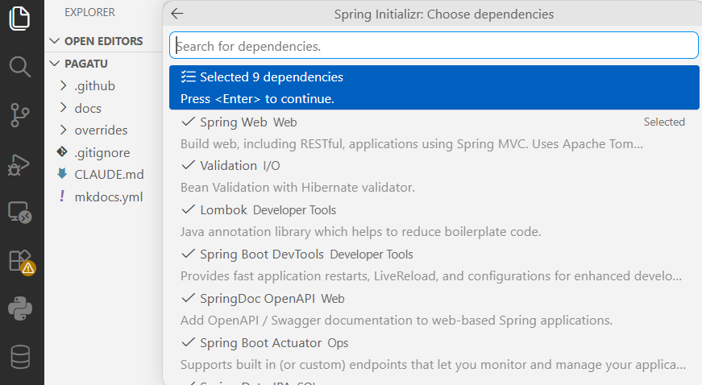
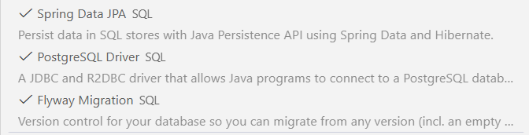
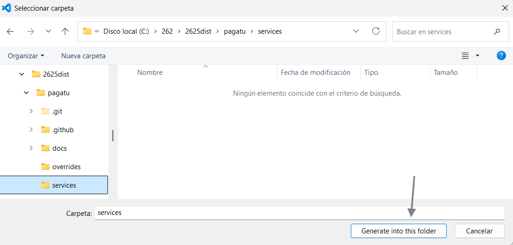
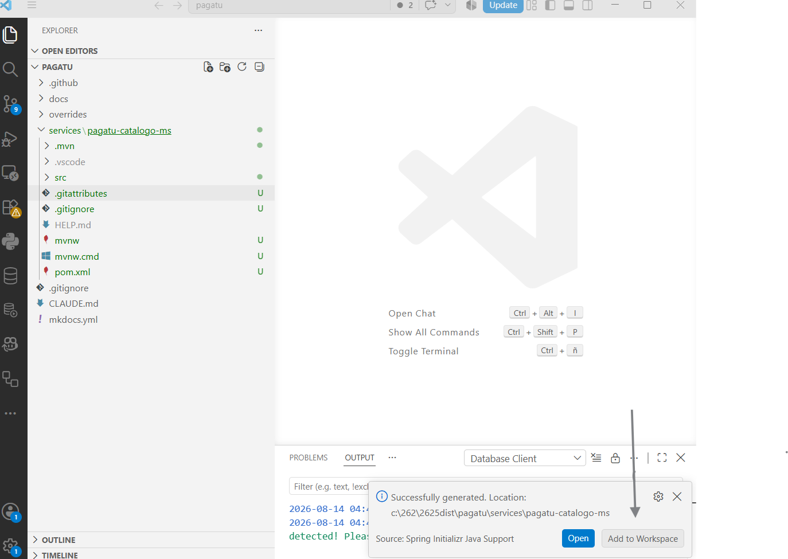
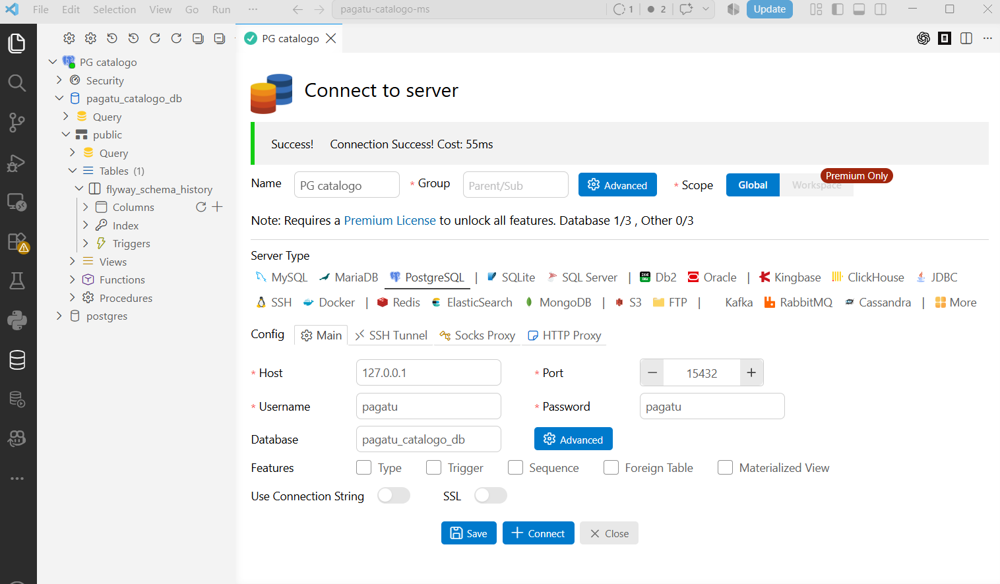
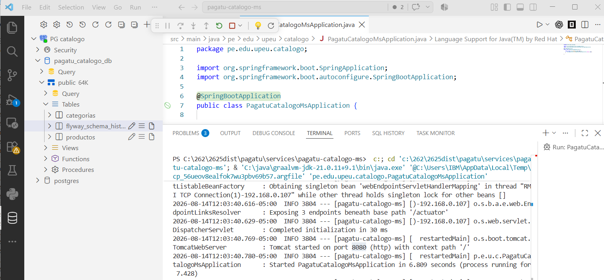

S1 - Construcción de un servicio base para un sistema distribuido¶
Por: Angel Sullon Macalupu @asullom - 2026
1. Introducción¶
Tiempo: 20 min.
1.1 Presentación de la sesión¶
Esta sesión abre la Unidad 1 del proyecto del curso: construye el primer microservicio del sistema, bien delimitado, persistente, observable y escalable. Con él quedan establecidas las convenciones (estructura de capas, ejecución DEV/PROD local, trazabilidad) que se repetirán en cada microservicio posterior del proyecto. El porqué de migrar hacia microservicios se explica en 1.6, a partir del caso de la plataforma de comercio electrónico — esta sesión construye solo el primer paso de ese camino, no el sistema completo.
1.2 Índice¶
- Arquitectura de un microservicio: responsabilidad única y capas internas.
- Persistencia: PostgreSQL y migraciones con Flyway.
- Ejecución reproducible y observable en DEV y escalamiento horizontal (PROD local con Docker, opcional).
1.3 Propósito de aprendizaje¶
Al concluir la clase, estarás en condiciones de:
- Construir e implementar un microservicio stateless con API REST, persistencia en PostgreSQL, validación de entradas, documentación de endpoints con Swagger, verificación de salud con Actuator y ejecución reproducible en desarrollo (opcionalmente también en producción local con Docker).
1.4 Producto de sesión¶
pagatu-catalogo-ms funcional con CRUD de categorías y de productos, ejecutable en DEV con Maven Wrapper con múltiples instancias en paralelo, PostgreSQL, Swagger, Actuator, README operativo y pruebas por shell. De forma opcional, también ejecutable en producción local con Docker.
1.5 Metodología¶
Tabla 1. Metodología de la sesión
| Actividades a Realizar en el Periodo | Orientaciones generales (Orientaciones Metodológicas) | Material de estudio recomendado |
|---|---|---|
| Revisión previa individual | Leer el sílabo de la Unidad 1 y el caso de la plataforma de comercio electrónico (ver 1.6). Trabajo individual, antes de clase; preparar el entorno local (Java 21, Docker) si aún no está listo. | Sílabo del curso Unidad 1, guía de sesión (MkDocs), plataforma UPeU. |
| Clase presencial | Construcción guiada de pagatu-catalogo-ms: entidad, CRUD, PostgreSQL, Flyway, Swagger, Actuator y filtro de trazabilidad. Trabajo individual, siguiendo al docente paso a paso; consulta inmediata ante errores de arranque o de conexión a base de datos. Producción local con Docker (3.6-3.7) es alcance opcional: no es necesario completarla para cerrar la sesión. |
Pasos 3.1 a 3.7 de esta guía, VS Code, Docker Desktop, repositorio GitHub pagatu. |
| Evaluación formativa | Revisión en clase del servicio ejecutando en DEV, con múltiples instancias corriendo en paralelo. La evidencia se completa y sustenta de forma individual, fuera del aula, según los criterios mínimos de la sección 4.4. | Indicaciones de entrega (4.3), rúbrica de evaluación (4.6), repositorio GitHub pagatu (tag de cierre de sesión), plataforma UPeU (entrega del PDF). |
1.6 Motivación de la sesión¶
1.6.1 Caso: plataforma de comercio electrónico¶
Una empresa desarrolla un sistema de comercio electrónico. Inicialmente, todo el sistema fue construido como una sola aplicación monolítica.
Con el crecimiento del negocio comienzan a aparecer problemas:
- El sistema tarda más en desplegarse.
- Errores en un módulo afectan a todo el sistema.
- Es difícil escalar partes específicas del sistema.
- Los equipos de desarrollo trabajan sobre el mismo código.
El equipo de ingeniería decide rediseñar la arquitectura del sistema utilizando microservicios.
Preguntas de análisis
Activación de conocimientos previos
- ¿Qué problemas tiene la arquitectura monolítica en este caso?
- ¿Por qué una empresa migraría a microservicios?
Comprensión arquitectónica
- ¿Qué ventajas ofrece dividir el sistema en servicios?
- ¿Qué desventajas trae dividir el sistema en servicios, más allá del costo (por ejemplo: complejidad operativa, consistencia de datos entre servicios, latencia de red, dificultad para depurar un flujo que cruza varios servicios)?
En esta sesión se inicia ese rediseño construyendo el primer componente del sistema pagatu: pagatu-catalogo-ms.
1.7 Ubicación en el curso¶
- Unidad: U1 - Sistema distribuido base orientado a producción.
- Producto del curso: Proyecto Sello: sistema distribuido de microservicios end-to-end, configurable, escalable, seguro, resiliente, consistente, observable, integrado con frontend y defendido técnicamente.
- Producto de unidad: sistema distribuido base funcional, configurable y preparado para múltiples instancias, ejecutable en desarrollo y producción local en paralelo.
- Avance del producto en esta sesión: primer microservicio REST funcional, persistente, observable y ejecutable fuera del IDE.
Roadmap para elaborar el producto de la unidad (Container diagram C4 nivel 2):
Figura 1. Roadmap del producto de la unidad
flowchart TB
Cliente["Cliente de prueba - PowerShell / bash / Swagger"]
Gateway["Gateway - punto único de acceso - balanceo de carga"]
Catalogo["pagatu-catalogo-ms - HOY - REST + BD + health"]
Orden["orden-ms - trabajo aplicado"]
Eureka["Registro de servicios - Eureka"]
Config["Servidor de configuración - Config Server"]
Repo[("Repositorio de configuración - pagatu-catalogo-ms.yml, pagatu-orden-ms.yml")]
Cliente --> Gateway
Gateway --> Catalogo
Gateway --> Orden
Gateway -. descubre servicios .-> Eureka
Catalogo -. registra instancia .-> Eureka
Orden -. registra instancia .-> Eureka
Catalogo -. carga configuración .-> Config
Orden -. carga configuración .-> Config
Config --> Repo
classDef today fill:#ffe08a,stroke:#9a6b00,stroke-width:2px,color:#111;
class Catalogo today;Hoy se construye el primer componente real de la U1: pagatu-catalogo-ms. En las siguientes sesiones se agregan configuración centralizada, registro de servicios, múltiples instancias, Gateway y balanceo. La evaluación U1 valida el sistema base integrado construido con esos componentes.
2. Explica¶
Tiempo: 25 min.
2.1 Arquitectura de la sesión¶
Figura 2. Arquitectura de capas de pagatu-catalogo-ms en la sesión S1
flowchart TB
Cliente["Cliente de prueba - PowerShell / bash / Swagger"] -->|"HTTP + JSON"| Filter["CorrelationIdFilter - agrega traceId, transparente"]
Filter --> Controller["CategoriaController"]
Controller --> DTO["DTO - CategoriaRequest / CategoriaResponse"]
DTO --> Service["CategoriaService"]
Service --> Mapper["CategoriaMapper"]
Mapper --> Entity["Entity - Categoria"]
Entity --> Repository["CategoriaRepository"]
Repository --> DB[("PostgreSQL - tabla categorias")]
Controller -.->|"error de validación (@Valid)"| Handler["GlobalExceptionHandler"]
Service -.->|"error de negocio (no existe)"| HandlerLectura del diagrama:
- El cliente sí llama al controller — la petición pasa primero por el filtro de trazabilidad (agrega el
traceId, no cambia el request) antes de llegar al controller. El cliente nunca nota esa capa intermedia. - En S1 el
traceIdlo genera el propio filtro, porque todavía no hay frontend: el cliente de prueba es PowerShell/bash/Swagger, no Angular. Desde S11 (integración con el cliente frontend), Angular podrá enviar su propioX-Trace-IDy el filtro lo respeta en vez de generar uno nuevo — pero eso es fuera del alcance de U1. - El controller recibe y devuelve DTO (
CategoriaRequest/CategoriaResponse), nunca la entidad JPA directamente. El service delega enCategoriaMapperla conversión entre el DTO y la entidadCategoriaantes de pasarla al repository (y de vuelta a DTO para la respuesta). - El controller nunca habla directo con el repository ni con la base de datos: siempre pasa por el service.
GlobalExceptionHandlerrecibe excepciones de más de una capa, no solo del controller: la validación@Validfalla en el borde del controller (antes de que su método se ejecute), peroResourceNotFoundExceptionla lanza la propiaCategoriaService/ProductoService(enbuscarOFallar(), ver 3.5.4 y 3.5.8) cuando elidno existe. Spring intercepta la excepción venga de donde venga y la enruta al handler — ninguna capa "llama" al handler explícitamente.- Si algo falla en cualquier capa,
GlobalExceptionHandlerintercepta el error y responde con un formato consistente, en vez de dejar que el error crudo de Spring llegue al cliente.
Este diagrama es el mapa que guía el resto de la explicación: cada apartado siguiente desarrolla uno de sus componentes, en el mismo orden del Índice (1.2).
2.2 Arquitectura de un microservicio: responsabilidad única y capas internas¶
Un microservicio debe tener responsabilidad clara, persistencia propia, configuración por ambiente y capacidad de ejecutarse de forma independiente.
Ejemplo: pagatu-catalogo-ms se encarga de gestionar categorías, conceptos de pago y sus precios, con su propia base de datos. No debería guardar clientes, órdenes ni pagos. Si más adelante orden-ms necesita saber si un concepto de pago existe y cuál es su precio, consulta a pagatu-catalogo-ms por red en lugar de leer directamente su base de datos.
2.3 Persistencia: PostgreSQL y migraciones con Flyway¶
El microservicio no crea sus propias tablas al arrancar: Flyway ejecuta el script de migración (V1__create_catalogo_tables.sql, ver 3.5.1) una sola vez, y deja un registro de que ya se aplicó. Luego Hibernate/JPA solo valida que las entidades Categoria y Producto coincidan con las tablas creadas (ddl-auto: validate) — no crea ni modifica estructura.
Figura 3. Modelo entidad-relación de categorias y productos
erDiagram
CATEGORIAS ||--o{ PRODUCTOS : contiene
CATEGORIAS {
bigint id PK
varchar nombre
varchar descripcion
}
PRODUCTOS {
bigint id PK
varchar nombre
varchar descripcion
numeric precio
boolean activo
bigint id_categoria FK
}id_categoria es una llave foránea normal de PostgreSQL (REFERENCES categorias(id)), no una integración entre microservicios: ambas tablas viven en la misma base de datos de pagatu-catalogo-ms. Una Categoria puede existir sin Productos asociados, pero todo Producto exige una Categoria válida (NOT NULL).
Esta separación importa: si Hibernate pudiera crear o alterar tablas solo (ddl-auto: update), el esquema real de producción quedaría a merced de cómo esté escrita la entidad Java en cada momento, sin historial ni control de versiones del cambio. Con Flyway, cada cambio de esquema es un script versionado y revisable, igual en DEV que en cualquier otro ambiente.
Error frecuente: si PostgreSQL está apagado o el contenedor de compose-dev.yml (ver 3.2.3) no levantó, la aplicación no arranca — Flyway no logra conectarse para aplicar la migración. Antes de asumir un error de código, revisa que el contenedor esté corriendo y que las variables de conexión coincidan.
2.4 Ejecución reproducible en DEV y escalamiento horizontal¶
2.4.1 DEV: aplicación fuera de Docker¶
Figura 4. Ejecución del microservicio en DEV, fuera de Docker
flowchart TB
DevClient["Cliente - PowerShell / bash / Swagger"]
DevApp1["pagatu-catalogo-ms - Java 21 + Maven Wrapper - puerto 8080"]
DevApp2["pagatu-catalogo-ms - segunda instancia (3.4) - puerto 8081"]
subgraph DevDocker["Docker: solo base de datos"]
DevDb[("pagatu_catalogo_db - PostgreSQL - localhost:15432 -> 5432")]
end
DevClient -->|"localhost:8080"| DevApp1
DevClient -.->|"localhost:8081"| DevApp2
DevApp1 -->|"localhost:15432"| DevDb
DevApp2 -.->|"localhost:15432"| DevDb
classDef app fill:#eef6ff,stroke:#2b6cb0,color:#111;
classDef db fill:#fff4de,stroke:#b7791f,color:#111;
class DevApp1,DevApp2 app;
class DevDb db;En DEV, la aplicación corre en el host con Maven Wrapper, en el puerto fijo 8080; solo PostgreSQL corre en Docker. La segunda instancia (línea punteada, puerto 8081) es el caso secundario que se practica más adelante, en 3.4 — el resto de esta guía trabaja solo con la primera instancia, en 8080.
2.4.2 PROD local: aplicación dentro de Docker¶
Esta parte sí se practica en S1 (ver 3.6-3.7) — muestra, por contraste con 2.4.1, qué cambia cuando la aplicación misma corre dentro de Docker, no solo la base de datos.
Figura 5. Ejecución del microservicio en PROD local, dentro de Docker
flowchart TB
ProdClient["Cliente interno - curl container"]
subgraph ProdDocker["Docker Network: pagatu-catalogo-int"]
ProdApp1["pagatu-catalogo-ms - instancia 1 - jar - 8080 interno"]
ProdApp2["pagatu-catalogo-ms - instancia 2 - jar - 8080 interno"]
ProdDb[("pagatu_catalogo_db - PostgreSQL - pagatu-postgres-catalogo:5432")]
end
ProdClient -->|"pagatu-catalogo-ms:8080"| ProdApp1
ProdClient -->|"pagatu-catalogo-ms:8080"| ProdApp2
ProdApp1 -->|"pagatu-postgres-catalogo:5432"| ProdDb
ProdApp2 -->|"pagatu-postgres-catalogo:5432"| ProdDb
classDef app fill:#eef6ff,stroke:#2b6cb0,color:#111;
classDef db fill:#fff4de,stroke:#b7791f,color:#111;
class ProdApp1,ProdApp2 app;
class ProdDb db;Las dos flechas del cliente muestran el mismo destino, pagatu-catalogo-ms:8080 — eso es intencional, no un error: dentro de la red Docker, ambas instancias comparten ese mismo nombre de servicio y puerto interno, y es el DNS embebido de Docker el que reparte cada petición entre una u otra instancia por turno. Lo que cambia entre una petición y otra es qué instancia responde por detrás, no lo que el cliente pide — a diferencia de DEV (2.4.1), donde el cliente sí elige explícitamente 8080 u 8081.
Regla práctica:
- Si la aplicación corre fuera de Docker, usa
localhostcon el puerto expuesto por Docker. - Si la aplicación corre dentro de Docker, usa el nombre del servicio y el puerto interno.
Error frecuente: levantar más de dos instancias en el laboratorio. Cada instancia adicional consume CPU y memoria del equipo del estudiante sin aportar valor pedagógico extra en S1 — dos instancias bastan para demostrar el patrón (ver 3.4 y 3.7.4).
2.5 Contrato y versionado de API¶
Versionado básico de API: pagatu-catalogo-ms versiona su contrato en la propia URL (/api/v1/...). Es la forma más simple de versionado: si en el futuro un cambio rompe compatibilidad, se publica /api/v2/... sin obligar a los consumidores existentes (otros microservicios, un futuro frontend, o cualquier integración externa) a migrar de inmediato. En S1 basta con fijar el prefijo v1; no se implementa todavía coexistencia de versiones.
Error frecuente: dejar el contrato sin códigos de error documentados. Un contrato verificable incluye 400, 404 y 500, no solo el camino feliz.
Swagger (SpringDoc OpenAPI, ver 3.2.1) publica este contrato como documentación viva y siempre sincronizada con el código.
3. Aplica: actividad práctica guiada¶
Tiempo: 2h.
Actividad: construcción guiada de pagatu-catalogo-ms, el primer microservicio REST del proyecto, con CRUD completo de Categoria y Producto (Producto de la sesión en 1.4).
Propósito de la actividad: construir pagatu-catalogo-ms de punta a punta — desde el proyecto vacío hasta el CRUD completo de Categoria y Producto ejecutando en DEV, con persistencia, validación y trazabilidad — verificando cada incremento antes de continuar al siguiente.
Orientaciones metodológicas: en el laboratorio, el docente guía la construcción de pagatu-catalogo-ms paso a paso frente a la clase, y los estudiantes replican cada paso en su propio equipo, verificando el resultado con comandos de consola antes de avanzar al siguiente. La versión actual usa monorepo, nombres con sufijo -ms y PostgreSQL para los microservicios; el patrón completo se replica luego en orden-ms como trabajo aplicado (sección 4).
Actividades para realizar:
- 3.1 Instalar y verificar Java 21, VS Code y sus extensiones.
- 3.2 Crear el proyecto Spring Boot con las dependencias base y conexión a la base de datos.
- 3.3 Crear las excepciones y el filtro de trazabilidad.
- 3.4 Simular escalamiento horizontal (múltiples instancias).
- 3.5 Construir el CRUD de
CategoriayProducto. - 3.6 Configurar producción local con Docker (opcional).
- 3.7 Probar producción local con Docker (opcional).
3.1 Instalar y verificar Java 21 LTS, VS Code y sus extensiones¶
Producto del paso: entorno de desarrollo configurado con Java 21 y VS Code. Se asume Docker Desktop ya instalado (parte del stack tecnológico del curso, ver 1.1); PostgreSQL no se instala en el host, se levanta con Docker desde el paso 3.2.
En las clases se trabajará con VS Code para mantener una guía común. Puedes usar otro IDE si ya lo dominas — por ejemplo IntelliJ IDEA —, pero entonces sigue tú mismo la equivalencia de cada paso, ya que las capturas y comandos de esta guía están pensados para VS Code. Aún usando otro IDE, la ejecución recomendada del microservicio será desde la consola de comandos, al estilo de un servidor Linux.
Windows — PowerShell como usuario normal:
winget install --id EclipseAdoptium.Temurin.21.JDK --exact
macOS (Homebrew no viene preinstalado en ningún Mac; una vez instalado, el comando de Temurin es el mismo para Intel y para Apple Silicon M1/M2/M3/M4 — Homebrew detecta la arquitectura automáticamente):
# 1. Instalar Homebrew (si no lo tiene)
/bin/bash -c "$(curl -fsSL https://raw.githubusercontent.com/Homebrew/install/HEAD/install.sh)"
# 2. Solo en Apple Silicon (M1/M2/M3/M4): agregar Homebrew al PATH.
# Se instala en /opt/homebrew (no en /usr/local como en Intel), y el
# propio instalador lo pide como paso obligatorio, no opcional.
echo 'eval "$(/opt/homebrew/bin/brew shellenv)"' >> ~/.zprofile
eval "$(/opt/homebrew/bin/brew shellenv)"
# 3. Instalar Temurin 21
brew install --cask temurin@21
Linux (Ubuntu/Debian) — repositorio oficial de Adoptium vía apt:
sudo apt install -y wget apt-transport-https gpg
wget -qO - https://packages.adoptium.net/artifactory/api/gpg/key/public | gpg --dearmor | sudo tee /etc/apt/trusted.gpg.d/adoptium.gpg > /dev/null
echo "deb https://packages.adoptium.net/artifactory/deb $(awk -F= '/^VERSION_CODENAME/{print$2}' /etc/os-release) main" | sudo tee /etc/apt/sources.list.d/adoptium.list
sudo apt update
sudo apt install -y temurin-21-jdk
Linux (Fedora/RHEL) — repositorio oficial de Adoptium vía dnf:
sudo tee /etc/yum.repos.d/adoptium.repo > /dev/null <<'EOF'
[Adoptium]
name=Adoptium
baseurl=https://packages.adoptium.net/artifactory/rpm/$(. /etc/os-release; echo $ID)/$releasever/$basearch
enabled=1
gpgcheck=1
gpgkey=https://packages.adoptium.net/artifactory/api/gpg/key/public
EOF
sudo dnf install -y temurin-21-jdk
Al finalizar, cierre y vuelva a abrir la terminal. Verifique la instalación:
java --version
javac --version
NOTA: Ambas comprobaciones deben mostrar Java 21. Si conserva una versión anterior, configure JAVA_HOME con la ruta del JDK 21 desde las variables de entorno de Windows, actualice Path para que %JAVA_HOME%\bin tenga prioridad y abra una terminal nueva.
3.1.1 Instalar VS Code y extensiones¶
Producto del paso: VS Code instalado con las extensiones necesarias para el resto de la sesión.
El curso usa VS Code como editor por defecto.
Windows PS:
winget install -e --id Microsoft.VisualStudioCode
macOS :
brew install --cask visual-studio-code
Linux (Ubuntu/Debian) :
sudo snap install --classic code
En cualquier sistema también puede descargarse el instalador desde https://code.visualstudio.com/download.
Al finalizar, instala las extensiones desde la terminal:
code --install-extension vscjava.vscode-java-pack
code --install-extension vmware.vscode-boot-dev-pack
code --install-extension cweijan.vscode-database-client2
Tabla 2. Extensiones de VS Code requeridas
| Extensión | ID | Para qué sirve |
|---|---|---|
| Extension Pack for Java | vscjava.vscode-java-pack |
Soporte base de Java (autocompletado, debug, Maven); incluye Spring Initializr Java Support, usado en 3.2.1. |
| Spring Boot Extension Pack | vmware.vscode-boot-dev-pack |
Herramientas específicas de Spring Boot: navegación de beans, Spring Boot Dashboard, soporte de application.yml. |
| Database Client | cweijan.vscode-database-client2 |
Cliente gráfico multi-motor: MySQL, PostgreSQL, SQLite, SQL Server, Oracle, entre otros — sirve para conectarse a la PostgreSQL de este proyecto (ver 3.2.3). |
Si instalaste todo pero Ctrl+Shift+P → \"Spring\" no muestra ningún comando
El Spring Boot Extension Pack puede quedar instalado pero deshabilitado. Reiniciar VS Code (o toda la PC) no lo arregla si quedó en ese estado.
Verifica en el panel de extensiones (Ctrl+Shift+X, buscar "Spring"): si el botón dice Enable en vez de Disable, está deshabilitado — actívalo. Recién ahí aparecen los comandos de Spring en la paleta de comandos.
3.2 Crear el proyecto Spring Boot desde VS Code con dependencias base y conexión a la base de datos¶
Producto del paso: proyecto Spring Boot creado en services/pagatu-catalogo-ms, con artifactId pagatu-catalogo-ms, paquete pe.edu.upeu.catalogo, dependencias base instaladas, PostgreSQL DEV levantado en Docker y un endpoint web simple respondiendo desde el navegador o shell.
En este paso no basta con crear el proyecto. Como se agregan Spring Data JPA, PostgreSQL Driver y Flyway, Spring Boot intentará configurar una conexión a base de datos al arrancar. Por eso, si ejecutas el microservicio sin configurar y levantar PostgreSQL, el arranque fallará.
Antes de crear el proyecto, así queda organizado el monorepo pagatu a partir de hoy:
pagatu/
├── services/
│ └── pagatu-catalogo-ms/ <- hoy
├── infra/ <- desde S2: config (S2), Eureka (S3), gateway (S4)
└── platform/ <- desde S3: observabilidad (S3-S4), Kafka (S8)
services/agrupa los microservicios de negocio — hoy solopagatu-catalogo-ms, en sesiones futuras se suman más (orden-ms,auth-ms,pago-ms). Los separamos de la raíz para no mezclar carpetas de negocio con infraestructura de soporte.infra/es la infraestructura propia del sistema (Config Server, Eureka, Gateway): sostiene a los microservicios pero no tiene valor de negocio propio — se agrega progresivamente (Config Server en S2, Eureka en S3, Gateway en S4).platform/son dependencias compartidas de laboratorio, no exclusivas depagatu: observabilidad (Prometheus/Loki desde S3, Grafana desde S4) y Kafka (mensajería asíncrona, desde S8).
3.2.1 Crear el proyecto con Spring Initializr desde VS Code¶
Desde la raíz del monorepo pagatu, abre VS Code, Ctrl+Shift+P y ejecuta el comando:
Spring Initializr: Create a Maven Project
Usa la siguiente configuración:
Tabla 3. Configuración del proyecto en Spring Initializr
| Campo | Valor |
|---|---|
| Project | Maven Project |
| Spring Boot | 4.0.7 |
| Language | Java |
| Group Id | pe.edu.upeu |
| Artifact Id | pagatu-catalogo-ms |
| Package name | pe.edu.upeu.catalogo |
| Packaging | Jar |
| Java | 21 |
| Dependencias | Seleccionar dependencias del proyecto |
| Ubicación sugerente | services/pagatu-catalogo-ms puedes poner en cualquier lugar |
Nota sobre la versión: el generador de Spring Initializr ya no ofrece ninguna versión 3.x — las únicas opciones son líneas 4.x. Se fija 4.0.7 por el mismo motivo verificado en LP2 (ver docs/lp2/adr/ADR-003-spring-boot-4.md del repo bomerp): dentro de la línea 4.x, SpringDoc OpenAPI declara compatibilidad solo hasta 4.1.0-M1, así que 4.0.7 es la versión estable dentro de ese rango. Si al generar el proyecto ves spring-boot-starter-web reemplazado por spring-boot-starter-webmvc, o starters de prueba granulares en vez de uno solo, es esperado en esta línea de Boot — no lo corrijas.
Dependencias a seleccionar:
Tabla 4. Dependencias del proyecto
| Grupo | Dependencias | Propósito |
|---|---|---|
| API REST base | Spring Web, Validation | Exponer endpoints HTTP y validar entradas |
| Productividad | Lombok, Spring Boot DevTools | Reducir código repetitivo y facilitar ejecución en desarrollo |
| Documentación y operación | SpringDoc OpenAPI WebMvc UI, Spring Boot Actuator | Documentar la API con Swagger y verificar health |
| Persistencia | Spring Data JPA, PostgreSQL Driver, Flyway | Acceso a datos, conexión a PostgreSQL y migraciones de BD |
Referencia visual (selección real en VS Code con Spring Boot 4.0.7, las 9 dependencias de la tabla):
Figura 6. Selección de dependencias en Spring Initializr (1/2)

Figura 7. Selección de dependencias en Spring Initializr (2/2)

Nota sobre motor de base de datos: en DIST se trabaja con PostgreSQL (no Oracle — Oracle es el motor de LP2/BD2, fuera del alcance de este curso). Si el equipo prefiere MySQL, es una alternativa válida: cambia PostgreSQL Driver por MySQL Driver en el Initializr y flyway-database-postgresql por flyway-mysql en el pom.xml — el resto de la guía (Flyway, JPA, ddl-auto: validate) aplica igual, solo cambia el driver y la URL de conexión.
Después de Enter, el asistente pide dónde guardar el proyecto. Navega hasta services/ y da clic en "Generate into this folder":
Figura 8. Selector de carpeta de VS Code para generar el proyecto

Al terminar, VS Code confirma la generación y el proyecto queda visible en el Explorer:
Figura 9. Proyecto generado, visible en el Explorer de VS Code

3.2.2 Ejecutar una primera vez y reconocer el fallo esperado¶
El proyecto trae Maven Wrapper (mvnw/mvnw.cmd): no requiere tener Maven instalado en el host, así que todos los comandos Maven de esta guía se ejecutan con el wrapper, nunca con mvn a secas.
Ubícate en la carpeta del microservicio:
# Windows (PowerShell o cmd)
cd services/pagatu-catalogo-ms
.\mvnw.cmd spring-boot:run
# macOS / Linux
cd services/pagatu-catalogo-ms
./mvnw spring-boot:run
Si todavía no existe configuración de base de datos, el error esperado será parecido a:
APPLICATION FAILED TO START
Failed to configure a DataSource: 'url' attribute is not specified and no embedded datasource could be configured.
Reason: Failed to determine a suitable driver class
No se corrige quitando JPA ni usando H2. Se corrige declarando PostgreSQL DEV y levantando la base de datos con Docker.
3.2.3 Configurar el ambiente de desarrollo¶
Producto del paso: ambiente DEV completo — PostgreSQL en Docker y la aplicación configurada para conectarse a él.
El ambiente de desarrollo de pagatu-catalogo-ms tiene dos partes: PostgreSQL corriendo en Docker (compose-dev.yml) y la propia aplicación configurada para encontrarlo (application.yml/application-dev.yml). La aplicación se ejecuta en DEV con Maven Wrapper desde el host — solo la base de datos vive en Docker.
Docker: PostgreSQL DEV
En services/pagatu-catalogo-ms, crea el archivo compose-dev.yml:
name: pagatu-catalogo-dev
services:
postgres-catalogo-dev:
image: postgres:16-alpine
container_name: pagatu-postgres-catalogo-dev
restart: unless-stopped
environment:
POSTGRES_DB: pagatu_catalogo_db
POSTGRES_USER: pagatu
POSTGRES_PASSWORD: pagatu
ports:
- "15432:5432"
volumes:
- pagatu_catalogo_dev_data:/var/lib/postgresql/data
volumes:
pagatu_catalogo_dev_data:
compose-dev.yml equivalente con MySQL (alternativa a esta misma, con un usuario propio en vez de root):
name: pagatu-catalogo-dev
services:
mysql-catalogo-dev:
image: mysql:8.4
container_name: pagatu-mysql-catalogo-dev
restart: unless-stopped
environment:
MYSQL_ROOT_PASSWORD: pagatu
MYSQL_DATABASE: pagatu_catalogo_db
MYSQL_USER: pagatu
MYSQL_PASSWORD: pagatu
ports:
- "13306:3306"
volumes:
- pagatu_catalogo_dev_data:/var/lib/mysql
volumes:
pagatu_catalogo_dev_data:
MYSQL_USER/MYSQL_PASSWORD crean el usuario pagatu con privilegios acotados a pagatu_catalogo_db — la aplicación se conecta como pagatu, no como root. MYSQL_ROOT_PASSWORD sigue siendo obligatorio para la imagen (MySQL no arranca sin él), pero no lo usa el backend. La URL de conexión en application-dev.yml cambiaría a jdbc:mysql://localhost:13306/pagatu_catalogo_db.
Levanta la base de datos:
PowerShell / bash macOS/Linux:
docker compose -f compose-dev.yml up -d
docker ps
Además de docker ps, puedes verificar la conexión con un cliente gráfico de base de datos (extensión de VS Code, DBeaver, pgAdmin, etc.): host 127.0.0.1, puerto 15432, usuario y contraseña pagatu, base de datos pagatu_catalogo_db. En este punto (solo el contenedor levantado, sin ejecutar aún la aplicación) la conexión ya debe ser exitosa, con la base vacía — la captura de referencia se tomó luego de ejecutar la aplicación, después de que Flyway aplicó la migración, por eso ya muestra la tabla flyway_schema_history.
Figura 10. Conexión exitosa a PostgreSQL vía cliente gráfico en VS Code

Aplicación: application.yml y application-dev.yml
Como la aplicación corre fuera de Docker y solo PostgreSQL corre dentro, la configuración debe apuntar a localhost:15432, que es el puerto publicado por el contenedor de base de datos.
En src/main/resources, crea o ajusta application.yml como configuración base:
spring:
application:
name: pagatu-catalogo-ms
profiles:
active: dev
Luego crea application-dev.yml para la configuración de desarrollo:
server:
port: 8080
spring:
datasource:
url: jdbc:postgresql://localhost:15432/pagatu_catalogo_db
username: pagatu
password: pagatu
driver-class-name: org.postgresql.Driver
flyway:
enabled: true
locations: classpath:db/migration
jpa:
hibernate:
ddl-auto: validate
show-sql: true
properties:
hibernate:
format_sql: true
devtools:
restart:
enabled: true
livereload:
enabled: true
springdoc:
swagger-ui:
path: /swagger-ui.html
logging:
level:
pe.edu.upeu.catalogo: DEBUG
management:
endpoints:
web:
exposure:
include: health,info,metrics
endpoint:
health:
show-details: always
El puerto queda fijo en 8080 para todo el resto de esta guía — más simple para probar con Swagger/shell sin tener que buscar qué puerto asignó Spring Boot cada vez. Cuando en 3.4 se necesite escalar a varias instancias, el puerto de la segunda se pasa como argumento de línea de comandos, sin tocar este archivo (ver 3.4).
En DEV, Flyway queda activo y ejecuta automáticamente V1__create_catalogo_tables.sql al arrancar la aplicación (se crea en 3.5.1). JPA/Hibernate no crea tablas; solo valida que las entidades coincidan con la estructura de la base de datos mediante ddl-auto: validate.
En S2 esta configuración se moverá progresivamente al Config Server, que busca el archivo de configuración por spring.application.name (pagatu-catalogo-ms.yml en el config-repo) — por eso ese nombre lleva el mismo prefijo pagatu- que el artifactId, y no queda como pagatu-catalogo-ms a secas: evita ambigüedad si en algún momento hay otro proyecto con un servicio del mismo nombre corriendo contra un registro compartido. En S1 la configuración se mantiene local para que el alumno entienda primero qué necesita el microservicio para arrancar.
3.2.4 Ejecutar y comprobar que ya no falla¶
Antes de ejecutar la aplicación, comprueba desde la consola que PostgreSQL DEV está listo y que la base de datos existe.
PowerShell / bash macOS/Linux:
docker exec -it pagatu-postgres-catalogo-dev psql -U pagatu -d pagatu_catalogo_db -c "SELECT current_database();"
docker exec -it pagatu-postgres-catalogo-dev psql -U pagatu -d pagatu_catalogo_db -c "\dt"
Resultado esperado:
current_database
------------------
pagatu_catalogo_db
Si \dt muestra Did not find any relations, está bien en este momento: aún no se ha creado la tabla categorias.
Con PostgreSQL DEV levantado y verificado, ejecuta la aplicación:
# Windows (PowerShell o cmd)
.\mvnw.cmd spring-boot:run
# macOS / Linux
./mvnw spring-boot:run
Verifica que la aplicación arrancó sin el error de conexión de 3.2.2:
Tomcat started on port 8080 (http) with context path '/'
Confirma también con /actuator/health (disponible desde 3.2.1, sin necesitar ningún endpoint propio todavía):
PowerShell:
Invoke-RestMethod `
-Method Get `
-Uri "http://localhost:8080/actuator/health"
bash macOS/Linux:
curl http://localhost:8080/actuator/health
Resultado esperado: {"status":"UP"}. Deja la aplicación corriendo — el siguiente paso la modifica en caliente, sin reiniciarla a mano.
3.2.5 Crear un endpoint temporal de saludo¶
Con la aplicación todavía corriendo (3.2.4), crea un controlador mínimo — esto también sirve para comprobar que Spring Boot DevTools recarga en caliente (hot reload) sin que vuelvas a ejecutar spring-boot:run.
controller/SaludoController.java
package pe.edu.upeu.catalogo.controller;
import org.springframework.web.bind.annotation.GetMapping;
import org.springframework.web.bind.annotation.RestController;
@RestController
public class SaludoController {
@GetMapping("/saludo")
public String saludo() {
return "pagatu-catalogo-ms activo";
}
}
Al guardar el archivo, la misma terminal donde sigue corriendo spring-boot:run (3.2.4) debe mostrar que DevTools detectó el cambio y reinició sola, sin que la detengas ni la vuelvas a lanzar:
Restarting due to 1 class path change (1 addition, 0 deletions, 0 modifications)
Prueba el endpoint:
PowerShell:
Invoke-RestMethod `
-Method Get `
-Uri "http://localhost:8080/saludo"
bash macOS/Linux:
curl http://localhost:8080/saludo
También puedes revisar Swagger en el puerto 8080:
http://localhost:8080/swagger-ui/index.html
Este endpoint es temporal para validar el arranque web y el hot-reload de DevTools. Luego el foco pasará al CRUD de categorías y productos.
Evidencia de cierre del paso 3.2
- Proyecto creado en
services/pagatu-catalogo-ms. pom.xmlcon dependencias base y persistencia PostgreSQL.- PostgreSQL DEV ejecutando en Docker.
application.ymlcon perfildevactivo.application-dev.ymlcon puerto8080y conexión a PostgreSQL DEV.- Endpoint
/saludorespondiendo.
3.3 Crear las excepciones y el filtro de trazabilidad¶
Producto del paso: manejo de errores centralizado y filtro de trazabilidad (traceId en cada log) funcionando en pagatu-catalogo-ms, antes de construir el CRUD.
Antes de construir Categoria y Producto (3.5), se crean dos piezas compartidas que usa todo el microservicio, no una entidad en particular: el manejo de errores y el filtro de trazabilidad. Así, cuando llegue el turno de cada recurso, ResourceNotFoundException ya existe y puede usarse directamente.
3.3.1 Crear las excepciones y el manejador global de errores¶
Estas clases son compartidas: no son específicas de Categoria ni de Producto, cualquier módulo de pagatu-catalogo-ms las reutiliza tal cual.
exception/ResourceNotFoundException.java
package pe.edu.upeu.catalogo.exception;
public class ResourceNotFoundException extends RuntimeException {
public ResourceNotFoundException(String mensaje) {
super(mensaje);
}
}
exception/GlobalExceptionHandler.java
package pe.edu.upeu.catalogo.exception;
import org.springframework.http.HttpStatus;
import org.springframework.http.ResponseEntity;
import org.springframework.web.bind.MethodArgumentNotValidException;
import org.springframework.web.bind.annotation.ExceptionHandler;
import org.springframework.web.bind.annotation.RestControllerAdvice;
import java.time.Instant;
import java.util.HashMap;
import java.util.Map;
@RestControllerAdvice
public class GlobalExceptionHandler {
@ExceptionHandler(ResourceNotFoundException.class)
public ResponseEntity<Map<String, Object>> handleNotFound(ResourceNotFoundException ex) {
Map<String, Object> body = new HashMap<>();
body.put("timestamp", Instant.now().toString());
body.put("status", HttpStatus.NOT_FOUND.value());
body.put("error", "Not Found");
body.put("message", ex.getMessage());
return ResponseEntity.status(HttpStatus.NOT_FOUND).body(body);
}
@ExceptionHandler(MethodArgumentNotValidException.class)
public ResponseEntity<Map<String, Object>> handleValidation(MethodArgumentNotValidException ex) {
Map<String, Object> body = new HashMap<>();
body.put("timestamp", Instant.now().toString());
body.put("status", HttpStatus.BAD_REQUEST.value());
body.put("error", "Bad Request");
body.put("message", "Error de validación en los datos enviados");
return ResponseEntity.status(HttpStatus.BAD_REQUEST).body(body);
}
}
3.3.2 Crear el filtro de trazabilidad CorrelationIdFilter y configurar logs¶
Este filtro agrega un identificador de trazabilidad a cada request usando el header X-Trace-ID. Si el cliente no lo envía, el filtro genera un UUID.
En S1 la trazabilidad es interna al microservicio:
Cliente shell / Swagger -> Controller -> Service -> Repository -> BD
Todos los logs producidos durante esa petición pueden compartir el mismo traceId.
filter/CorrelationIdFilter.java
package pe.edu.upeu.catalogo.filter;
import jakarta.servlet.FilterChain;
import jakarta.servlet.ServletException;
import jakarta.servlet.http.HttpServletRequest;
import jakarta.servlet.http.HttpServletResponse;
import org.slf4j.MDC;
import org.springframework.stereotype.Component;
import org.springframework.web.filter.OncePerRequestFilter;
import java.io.IOException;
import java.util.UUID;
@Component
public class CorrelationIdFilter extends OncePerRequestFilter {
public static final String TRACE_ID_HEADER = "X-Trace-ID";
public static final String MDC_KEY = "traceId";
@Override
protected void doFilterInternal(HttpServletRequest request,
HttpServletResponse response,
FilterChain filterChain) throws ServletException, IOException {
String traceId = request.getHeader(TRACE_ID_HEADER);
if (traceId == null || traceId.isBlank()) {
traceId = UUID.randomUUID().toString();
}
try {
MDC.put(MDC_KEY, traceId);
response.setHeader(TRACE_ID_HEADER, traceId);
filterChain.doFilter(request, response);
} finally {
MDC.remove(MDC_KEY);
}
}
}
Crea también src/main/resources/logback-spring.xml. Este archivo define el formato de logs e incluye el traceId en cada línea ([%X{traceId}]), con salida por consola y por archivo en logs/catalogo.log:
<?xml version="1.0" encoding="UTF-8"?>
<configuration>
<include resource="org/springframework/boot/logging/logback/defaults.xml"/>
<property name="LOG_PATTERN"
value="%d{yyyy-MM-dd HH:mm:ss.SSS} [%X{traceId}] %-5level %logger{36} - %msg%n"/>
<appender name="CONSOLE" class="ch.qos.logback.core.ConsoleAppender">
<encoder>
<pattern>${LOG_PATTERN}</pattern>
</encoder>
</appender>
<appender name="FILE" class="ch.qos.logback.core.rolling.RollingFileAppender">
<file>logs/catalogo.log</file>
<encoder>
<pattern>${LOG_PATTERN}</pattern>
</encoder>
<rollingPolicy class="ch.qos.logback.core.rolling.TimeBasedRollingPolicy">
<fileNamePattern>logs/catalogo-%d{yyyy-MM-dd}.log</fileNamePattern>
<maxHistory>7</maxHistory>
</rollingPolicy>
</appender>
<root level="INFO">
<appender-ref ref="CONSOLE"/>
<appender-ref ref="FILE"/>
</root>
</configuration>
Más adelante, cuando se agreguen Gateway, Feign o frontend, el mismo header X-Trace-ID podrá propagarse entre componentes para trazabilidad distribuida.
3.3.3 Ejecutar y probar¶
Verifica el cambio de formato. Antes de logback-spring.xml, la terminal mostraba el formato por defecto de Spring Boot (timestamp con zona horaria, PID, nombre de la app y del hilo):
2026-08-15T18:51:40.107-05:00 INFO 3804 --- [pagatu-catalogo-ms] [ restartedMain] p.e.u.c.PagatuCatalogoMsApplication : Started PagatuCatalogoMsApplication in 1.765 seconds (process running for 110927.327)
Después de reiniciar con logback-spring.xml en su lugar, el formato cambia al patrón definido ([%X{traceId}] en vez de PID/app/hilo):
2026-08-15 18:53:05.581 [] INFO o.s.boot.tomcat.TomcatWebServer - Tomcat started on port 8080 (http) with context path '/'
2026-08-15 18:53:05.590 [] INFO p.e.u.c.PagatuCatalogoMsApplication - Started PagatuCatalogoMsApplication in 1.715 seconds (process running for 111012.81)
2026-08-15 18:53:17.004 [22deb350-54b4-4dea-a9c6-b09aaae9cea6] INFO o.s.api.AbstractOpenApiResource - Init duration for springdoc-openapi is: 113 ms
Las primeras líneas (arranque de la app) muestran [] vacío: todavía no hay ninguna petición HTTP en curso, así que el MDC no tiene traceId que mostrar. La última línea ya trae un traceId real (22deb350-...) porque llegó una petición HTTP (por ejemplo, al abrir Swagger UI): el CorrelationIdFilter generó el UUID, lo puso en el MDC, y ese log —disparado durante esa petición— lo heredó automáticamente. Es la prueba de que el filtro de trazabilidad ya funciona de punta a punta.
3.4 Simular escalamiento horizontal (múltiples instancias)¶
Producto del paso: dos instancias de pagatu-catalogo-ms corriendo al mismo tiempo, cada una en un puerto distinto, ambas conectadas a la misma PostgreSQL DEV.
Figura 11. Escalamiento horizontal de pagatu-catalogo-ms con dos instancias en paralelo
flowchart TB
DevClient["Cliente - PowerShell / bash / Swagger"]
DevApp1["pagatu-catalogo-ms - instancia 1 - puerto 8080"]
DevApp2["pagatu-catalogo-ms - instancia 2 - puerto 8081"]
subgraph DevDocker["Docker: solo base de datos"]
DevDb[("pagatu_catalogo_db - PostgreSQL - localhost:15432 -> 5432")]
end
DevClient -->|"localhost:8080"| DevApp1
DevClient -->|"localhost:8081"| DevApp2
DevApp1 -->|"localhost:15432"| DevDb
DevApp2 -->|"localhost:15432"| DevDb
classDef app fill:#eef6ff,stroke:#2b6cb0,color:#111;
classDef db fill:#fff4de,stroke:#b7791f,color:#111;
class DevApp1,DevApp2 app;
class DevDb db;Un microservicio distribuido debe poder escalar horizontalmente: correr varias copias idénticas a la vez, cada una en su propio puerto, sin configuración fija que las haga chocar. Con server.port fijo en 8080 (el que usa el resto de esta guía), una segunda instancia no puede arrancar en la misma máquina — el puerto ya está ocupado.
3.4.1 Levantar una segunda instancia¶
Sin modificar application-dev.yml (para no romper el puerto 8080 que usan los pasos siguientes de esta guía), la Terminal 1 sigue corriendo tal cual en 8080 (la que ya tenías abierta desde 3.3.3). Abre una Terminal 2 nueva y pásale un puerto distinto como argumento de línea de comandos, desde services/pagatu-catalogo-ms:
# Windows (PowerShell o cmd) - Terminal 2 (simultánea, con Postgres y la Terminal 1 ya corriendo en 8080)
.\mvnw.cmd spring-boot:run "-Dspring-boot.run.arguments=--server.port=8081"
# macOS / Linux - Terminal 2 (simultánea, con Postgres y la Terminal 1 ya corriendo en 8080)
./mvnw spring-boot:run -Dspring-boot.run.arguments=--server.port=8081
--server.port=8081 le indica a Spring Boot que arranque en ese puerto en vez del 8080 fijo del application-dev.yml. También puedes usar --server.port=0 si prefieres que el sistema operativo asigne uno libre cualquiera — la diferencia es que con 8081 sabes el puerto de antemano, sin tener que leerlo de la consola.
3.4.2 Ejecutar y probar¶
Verifica que ambas instancias responden por separado, con el endpoint de saludo y con /actuator/health:
PowerShell:
Invoke-RestMethod -Method Get -Uri "http://localhost:8080/saludo"
Invoke-RestMethod -Method Get -Uri "http://localhost:8081/saludo"
Invoke-RestMethod -Method Get -Uri "http://localhost:8080/actuator/health"
Invoke-RestMethod -Method Get -Uri "http://localhost:8081/actuator/health"
bash macOS/Linux:
curl http://localhost:8080/saludo
curl http://localhost:8081/saludo
curl http://localhost:8080/actuator/health
curl http://localhost:8081/actuator/health
Resultado esperado: ambas responden pagatu-catalogo-ms activo y {"status":"UP"}, cada una en su propio puerto, conectadas de forma independiente a la misma PostgreSQL DEV.
Por qué importa esto en S1. Todavía no hay Gateway ni balanceador de carga — eso llega en S4 ("Punto único de acceso y distribución de tráfico"). Pero la capacidad de correr múltiples instancias sin puerto fijo es la base técnica que un balanceador necesita para repartir tráfico entre copias del mismo servicio; practicarla desde S1 deja esa evidencia lista para cuando el Gateway integre esta pieza.
3.6 y 3.7 son opcionales
El alcance evaluado de S1 termina en el escalamiento horizontal de 3.4. Producción local con Docker (3.6-3.7) es contenido adicional: profundiza la ejecución reproducible del microservicio, pero no es necesario completarlo para que la sesión se considere lograda, y no es prerequisito de S2 — Config Server (S2) se configura sobre el microservicio ejecutando en DEV, sin depender de que la aplicación misma haya corrido dentro de Docker. Si te queda tiempo en clase o quieres profundizar por tu cuenta, adelante.
3.5 Construir el CRUD de Categoria y Producto¶
Producto del paso: CRUD de Categoria y de Producto incorporados en pagatu-catalogo-ms, incluyendo entidades, capas de aplicación, validaciones y migración de base de datos, escritos directamente por el estudiante (sin depender de un repositorio externo), ejecutando en DEV con Swagger, health y CRUD verificados por shell.
pagatu-catalogo-ms gestiona lo que se puede comprar o pagar: no solo categorías, también los conceptos de pago concretos (Producto: nombre, descripción, precio y si está activo). Ambas entidades se construyen en esta misma sesión, siguiendo exactamente el mismo patrón de capas una y otra vez — una vez que entiendes el patrón con Categoria, replicarlo en Producto es mecánico.
Cada archivo de este paso se crea directamente dentro de services/pagatu-catalogo-ms/src/main/java/pe/edu/upeu/catalogo (o en src/main/resources cuando corresponda), siguiendo la misma estructura de carpetas usada en todo el curso:
config
controller
dto
entity
exception
filter
mapper
repository
service
exception/ y filter/ ya se crearon en 3.3 — aquí se agregan entity, repository, dto, mapper, service y controller.
Con ddl-auto: validate (ver 2.3), JPA no crea ni modifica tablas: solo compara las entidades contra lo que ya existe en la base de datos, y si no coincide, la aplicación falla al arrancar. Por eso el orden lógico es primero la migración Flyway, que define la estructura real, y recién después las entidades Java, que deben coincidir con ella exactamente.
3.5.1 Crear la migración Flyway de categorias y productos¶
Producto del paso: migración V1 aplicada sobre una base DEV limpia, con las tres tablas creadas (categorias, productos, flyway_schema_history) y verificadas en localhost:8080.
Antes de crear el archivo, baja el contenedor de PostgreSQL DEV y borra su volumen, para garantizar que Flyway va a aplicar la migración sobre una base completamente vacía — así se escribe el archivo una sola vez y se ejecuta una sola vez, sin arriesgarte a editar una migración que Flyway ya aplicó (ver el aviso al final de este paso):
docker compose -f compose-dev.yml down -v
src/main/resources/db/migration/V1__create_catalogo_tables.sql
El archivo crea ambas tablas de una vez, por eso su nombre no describe solo Categoria:
CREATE TABLE IF NOT EXISTS categorias (
id BIGINT GENERATED BY DEFAULT AS IDENTITY,
nombre VARCHAR(100) NOT NULL,
descripcion VARCHAR(255),
PRIMARY KEY (id)
);
CREATE TABLE IF NOT EXISTS productos (
id BIGINT GENERATED BY DEFAULT AS IDENTITY,
nombre VARCHAR(100) NOT NULL,
descripcion VARCHAR(255),
precio NUMERIC(10,2) NOT NULL,
activo BOOLEAN NOT NULL DEFAULT true,
id_categoria BIGINT NOT NULL REFERENCES categorias(id),
PRIMARY KEY (id)
);
productos sí lleva la relación con categorias desde esta primera versión: id_categoria es una llave foránea (REFERENCES categorias(id)) porque ambas tablas viven en la misma base de datos del mismo microservicio — es una relación relacional normal, no una llamada entre microservicios. Feign (o cualquier cliente HTTP) solo haría falta si Categoria y Producto vivieran en microservicios distintos; no es el caso aquí.
Con el archivo ya guardado (contenido final, sin más ediciones pendientes), levanta de nuevo el contenedor sobre la base vacía:
docker compose -f compose-dev.yml up -d
# Windows (PowerShell o cmd)
.\mvnw.cmd spring-boot:run
# macOS / Linux
./mvnw spring-boot:run
Ejecuta la aplicación (3.2.4). Flyway aplica V1 automáticamente al arrancar y crea las tres tablas: categorias, productos y flyway_schema_history.
Figura 12. Resultado al ejecutar la aplicación: las tres tablas creadas

Verifica en el navegador o con curl/Invoke-RestMethod que localhost:8080 responde: el endpoint /saludo (3.2.5) y /actuator/health ({"status":"UP"}, confirma que la conexión a PostgreSQL sigue viva después de aplicar la migración).
Lo que queda definido desde ahora es la estructura exacta que las entidades Categoria y Producto (siguiente paso) tienen que respetar: mismos nombres de columna, mismo NOT NULL, mismo tipo, y la misma llave foránea. Si alguna entidad no coincide, ddl-auto: validate hará fallar el arranque con un error claro señalando la diferencia.
Aviso — Migration checksum mismatch: Flyway trata cada migración ya aplicada como inmutable. Si de aquí en adelante necesitas corregir algo en V1__create_catalogo_tables.sql después de haberlo ejecutado, no lo edites — Spring Boot DevTools reinicia la app en cada guardado, Flyway recalcula el checksum del archivo, y como ya no coincide con el que quedó guardado en flyway_schema_history, el arranque falla con Migration checksum mismatch for migration version 1. Dos salidas: repetir el reset de este paso (down -v / up -d, válido mientras no haya datos reales que perder) o crear un archivo nuevo V2__create_catalogo_tables.sql con la corrección (obligatorio si ya hay datos que no quieres perder) — Flyway solo aplica migraciones nuevas hacia adelante, nunca reescribe una ya aplicada.
Si ya tienes datos que no quieres perder (más adelante en el curso, con datos de prueba cargados): no edites V1. Crea un archivo nuevo V2__create_catalogo_tables.sql con la corrección — Flyway solo aplica migraciones nuevas hacia adelante, nunca reescribe una ya aplicada.
Con la migración lista, ahora se construye Categoria completo: entidad, repositorio, DTO, mapper, servicio y controlador, en ese orden — antes de tocar Producto.
Entrega en dos partes: tags s01-servicio-base-p1 / s01-servicio-base-p2
Hasta aquí (Figura 12, las tres tablas creadas por Flyway) llega la
primera entrega de S1, tag s01-servicio-base-p1. La construcción del
CRUD de Categoria y Producto (3.5.2 en adelante: entidad,
repositorio, DTO, mapper, servicio y controlador de cada uno) es la
segunda entrega, tag s01-servicio-base-p2.
3.5.2 Crear la entidad Categoria¶
entity/Categoria.java
package pe.edu.upeu.catalogo.entity;
import jakarta.persistence.*;
import lombok.*;
@Entity
@Table(name = "categorias")
@Getter
@Setter
@Builder
@NoArgsConstructor
@AllArgsConstructor
public class Categoria {
@Id
@GeneratedValue(strategy = GenerationType.IDENTITY)
private Long id;
@Column(name = "nombre", nullable = false, length = 100)
private String nombre;
@Column(name = "descripcion", length = 255)
private String descripcion;
}
3.5.3 Crear el repositorio, los DTO y el mapper de Categoria¶
repository/CategoriaRepository.java
package pe.edu.upeu.catalogo.repository;
import pe.edu.upeu.catalogo.entity.Categoria;
import org.springframework.data.jpa.repository.JpaRepository;
public interface CategoriaRepository extends JpaRepository<Categoria, Long> {
}
dto/CategoriaRequest.java
package pe.edu.upeu.catalogo.dto;
import jakarta.validation.constraints.NotBlank;
import jakarta.validation.constraints.Size;
import lombok.Getter;
import lombok.Setter;
@Getter
@Setter
public class CategoriaRequest {
@NotBlank
@Size(max = 100)
private String nombre;
@Size(max = 255)
private String descripcion;
}
dto/CategoriaResponse.java
package pe.edu.upeu.catalogo.dto;
import lombok.AllArgsConstructor;
import lombok.Builder;
import lombok.Getter;
import lombok.NoArgsConstructor;
import lombok.Setter;
@Getter
@Setter
@Builder
@NoArgsConstructor
@AllArgsConstructor
public class CategoriaResponse {
private Long id;
private String nombre;
private String descripcion;
}
mapper/CategoriaMapper.java
package pe.edu.upeu.catalogo.mapper;
import pe.edu.upeu.catalogo.dto.CategoriaRequest;
import pe.edu.upeu.catalogo.dto.CategoriaResponse;
import pe.edu.upeu.catalogo.entity.Categoria;
import org.springframework.stereotype.Component;
@Component
public class CategoriaMapper {
public Categoria toEntity(CategoriaRequest request) {
return Categoria.builder()
.nombre(request.getNombre())
.descripcion(request.getDescripcion())
.build();
}
public CategoriaResponse toResponse(Categoria categoria) {
return CategoriaResponse.builder()
.id(categoria.getId())
.nombre(categoria.getNombre())
.descripcion(categoria.getDescripcion())
.build();
}
}
3.5.4 Crear el servicio de aplicación de Categoria¶
service/CategoriaService.java
package pe.edu.upeu.catalogo.service;
import pe.edu.upeu.catalogo.dto.CategoriaRequest;
import pe.edu.upeu.catalogo.dto.CategoriaResponse;
import pe.edu.upeu.catalogo.entity.Categoria;
import pe.edu.upeu.catalogo.exception.ResourceNotFoundException;
import pe.edu.upeu.catalogo.mapper.CategoriaMapper;
import pe.edu.upeu.catalogo.repository.CategoriaRepository;
import lombok.RequiredArgsConstructor;
import org.springframework.stereotype.Service;
import java.util.List;
@Service
@RequiredArgsConstructor
public class CategoriaService {
private final CategoriaRepository categoriaRepository;
private final CategoriaMapper categoriaMapper;
public List<CategoriaResponse> listar() {
return categoriaRepository.findAll().stream()
.map(categoriaMapper::toResponse)
.toList();
}
public CategoriaResponse obtener(Long id) {
return categoriaMapper.toResponse(buscarOFallar(id));
}
public CategoriaResponse crear(CategoriaRequest request) {
Categoria categoria = categoriaMapper.toEntity(request);
return categoriaMapper.toResponse(categoriaRepository.save(categoria));
}
public CategoriaResponse actualizar(Long id, CategoriaRequest request) {
Categoria categoria = buscarOFallar(id);
categoria.setNombre(request.getNombre());
categoria.setDescripcion(request.getDescripcion());
return categoriaMapper.toResponse(categoriaRepository.save(categoria));
}
public void eliminar(Long id) {
categoriaRepository.delete(buscarOFallar(id));
}
private Categoria buscarOFallar(Long id) {
return categoriaRepository.findById(id)
.orElseThrow(() -> new ResourceNotFoundException("Categoria no encontrada: " + id));
}
}
3.5.5 Crear el controlador REST de Categoria¶
controller/CategoriaController.java
package pe.edu.upeu.catalogo.controller;
import pe.edu.upeu.catalogo.dto.CategoriaRequest;
import pe.edu.upeu.catalogo.dto.CategoriaResponse;
import pe.edu.upeu.catalogo.service.CategoriaService;
import jakarta.validation.Valid;
import lombok.RequiredArgsConstructor;
import org.springframework.http.HttpStatus;
import org.springframework.web.bind.annotation.*;
import java.util.List;
@RestController
@RequestMapping("/api/v1/categorias")
@RequiredArgsConstructor
public class CategoriaController {
private final CategoriaService categoriaService;
@GetMapping
public List<CategoriaResponse> listar() {
return categoriaService.listar();
}
@GetMapping("/{id}")
public CategoriaResponse obtener(@PathVariable Long id) {
return categoriaService.obtener(id);
}
@PostMapping
@ResponseStatus(HttpStatus.CREATED)
public CategoriaResponse crear(@Valid @RequestBody CategoriaRequest request) {
return categoriaService.crear(request);
}
@PutMapping("/{id}")
public CategoriaResponse actualizar(@PathVariable Long id, @Valid @RequestBody CategoriaRequest request) {
return categoriaService.actualizar(id, request);
}
@DeleteMapping("/{id}")
@ResponseStatus(HttpStatus.NO_CONTENT)
public void eliminar(@PathVariable Long id) {
categoriaService.eliminar(id);
}
}
La validación evita que el microservicio acepte datos incompletos antes de llegar a la base de datos: @NotBlank y @Size(max = 100) en nombre (dto/CategoriaRequest.java) junto con @Valid en el controlador rechazan con HTTP 400 cualquier solicitud sin nombre o con un nombre demasiado largo.
Error frecuente: olvidar @Valid en el parámetro @RequestBody del controlador. Sin esa anotación, Spring ignora @NotBlank/@Size/@NotNull del DTO y deja pasar datos inválidos hasta el service (o hasta la base de datos).
Producto sigue exactamente el mismo patrón que Categoria: misma secuencia de capas, mismo estilo — solo cambian los campos propios del recurso.
3.5.6 Crear la entidad Producto¶
entity/Producto.java
package pe.edu.upeu.catalogo.entity;
import jakarta.persistence.*;
import lombok.*;
import java.math.BigDecimal;
@Entity
@Table(name = "productos")
@Getter
@Setter
@Builder
@NoArgsConstructor
@AllArgsConstructor
public class Producto {
@Id
@GeneratedValue(strategy = GenerationType.IDENTITY)
private Long id;
@Column(name = "nombre", nullable = false, length = 100)
private String nombre;
@Column(name = "descripcion", length = 255)
private String descripcion;
@Column(name = "precio", nullable = false, precision = 10, scale = 2)
private BigDecimal precio;
@Column(name = "activo", nullable = false)
private Boolean activo;
@ManyToOne(fetch = FetchType.LAZY)
@JoinColumn(name = "id_categoria", nullable = false)
private Categoria categoria;
}
A diferencia de LP2 (que no relaciona Categoria y Producto en su S1), aquí Producto sí lleva la relación desde el inicio: @ManyToOne es JPA estándar, sin nada distribuido de por medio, porque Categoria y Producto viven en la misma base de datos del mismo microservicio. Feign solo entraría en juego si Producto necesitara consultar una Categoria que viviera en otro microservicio — no es este caso.
3.5.7 Crear el repositorio, los DTO y el mapper de Producto¶
repository/ProductoRepository.java
package pe.edu.upeu.catalogo.repository;
import pe.edu.upeu.catalogo.entity.Producto;
import org.springframework.data.jpa.repository.JpaRepository;
public interface ProductoRepository extends JpaRepository<Producto, Long> {
}
dto/ProductoRequest.java
package pe.edu.upeu.catalogo.dto;
import jakarta.validation.constraints.DecimalMin;
import jakarta.validation.constraints.NotBlank;
import jakarta.validation.constraints.NotNull;
import jakarta.validation.constraints.Size;
import lombok.Getter;
import lombok.Setter;
import java.math.BigDecimal;
@Getter
@Setter
public class ProductoRequest {
@NotBlank
@Size(max = 100)
private String nombre;
@Size(max = 255)
private String descripcion;
@NotNull
@DecimalMin(value = "0.0", inclusive = true)
private BigDecimal precio;
@NotNull
private Boolean activo;
@NotNull
private Long categoriaId;
}
dto/ProductoResponse.java
package pe.edu.upeu.catalogo.dto;
import lombok.AllArgsConstructor;
import lombok.Builder;
import lombok.Getter;
import lombok.NoArgsConstructor;
import lombok.Setter;
import java.math.BigDecimal;
@Getter
@Setter
@Builder
@NoArgsConstructor
@AllArgsConstructor
public class ProductoResponse {
private Long id;
private String nombre;
private String descripcion;
private BigDecimal precio;
private Boolean activo;
private Long categoriaId;
}
mapper/ProductoMapper.java
package pe.edu.upeu.catalogo.mapper;
import pe.edu.upeu.catalogo.dto.ProductoRequest;
import pe.edu.upeu.catalogo.dto.ProductoResponse;
import pe.edu.upeu.catalogo.entity.Producto;
import org.springframework.stereotype.Component;
@Component
public class ProductoMapper {
public Producto toEntity(ProductoRequest request) {
return Producto.builder()
.nombre(request.getNombre())
.descripcion(request.getDescripcion())
.precio(request.getPrecio())
.activo(request.getActivo())
.build();
}
public ProductoResponse toResponse(Producto producto) {
return ProductoResponse.builder()
.id(producto.getId())
.nombre(producto.getNombre())
.descripcion(producto.getDescripcion())
.precio(producto.getPrecio())
.activo(producto.getActivo())
.categoriaId(producto.getCategoria().getId())
.build();
}
}
toEntity no asigna categoria — solo conoce el categoriaId (un Long), no la entidad Categoria completa. Cargar la Categoria real por su id y asignarla es responsabilidad del service (ver 3.5.8), porque requiere consultar CategoriaRepository, algo que el mapper no hace.
3.5.8 Crear el servicio de aplicación de Producto¶
service/ProductoService.java
package pe.edu.upeu.catalogo.service;
import pe.edu.upeu.catalogo.dto.ProductoRequest;
import pe.edu.upeu.catalogo.dto.ProductoResponse;
import pe.edu.upeu.catalogo.entity.Categoria;
import pe.edu.upeu.catalogo.entity.Producto;
import pe.edu.upeu.catalogo.exception.ResourceNotFoundException;
import pe.edu.upeu.catalogo.mapper.ProductoMapper;
import pe.edu.upeu.catalogo.repository.CategoriaRepository;
import pe.edu.upeu.catalogo.repository.ProductoRepository;
import lombok.RequiredArgsConstructor;
import org.springframework.stereotype.Service;
import java.util.List;
@Service
@RequiredArgsConstructor
public class ProductoService {
private final ProductoRepository productoRepository;
private final ProductoMapper productoMapper;
private final CategoriaRepository categoriaRepository;
public List<ProductoResponse> listar() {
return productoRepository.findAll().stream()
.map(productoMapper::toResponse)
.toList();
}
public ProductoResponse obtener(Long id) {
return productoMapper.toResponse(buscarOFallar(id));
}
public ProductoResponse crear(ProductoRequest request) {
Producto producto = productoMapper.toEntity(request);
producto.setCategoria(buscarCategoriaOFallar(request.getCategoriaId()));
return productoMapper.toResponse(productoRepository.save(producto));
}
public ProductoResponse actualizar(Long id, ProductoRequest request) {
Producto producto = buscarOFallar(id);
producto.setNombre(request.getNombre());
producto.setDescripcion(request.getDescripcion());
producto.setPrecio(request.getPrecio());
producto.setActivo(request.getActivo());
producto.setCategoria(buscarCategoriaOFallar(request.getCategoriaId()));
return productoMapper.toResponse(productoRepository.save(producto));
}
public void eliminar(Long id) {
productoRepository.delete(buscarOFallar(id));
}
private Producto buscarOFallar(Long id) {
return productoRepository.findById(id)
.orElseThrow(() -> new ResourceNotFoundException("Producto no encontrado: " + id));
}
private Categoria buscarCategoriaOFallar(Long categoriaId) {
return categoriaRepository.findById(categoriaId)
.orElseThrow(() -> new ResourceNotFoundException("Categoria no encontrada: " + categoriaId));
}
}
ProductoService ahora depende también de CategoriaRepository (ya existe desde 3.5.3) para validar que la categoriaId recibida corresponda a una categoría real antes de guardar o actualizar el producto — si no existe, responde HTTP 404 con el mismo ResourceNotFoundException que ya usa el resto del CRUD.
3.5.9 Crear el controlador REST de Producto¶
controller/ProductoController.java
package pe.edu.upeu.catalogo.controller;
import pe.edu.upeu.catalogo.dto.ProductoRequest;
import pe.edu.upeu.catalogo.dto.ProductoResponse;
import pe.edu.upeu.catalogo.service.ProductoService;
import jakarta.validation.Valid;
import lombok.RequiredArgsConstructor;
import org.springframework.http.HttpStatus;
import org.springframework.web.bind.annotation.*;
import java.util.List;
@RestController
@RequestMapping("/api/v1/productos")
@RequiredArgsConstructor
public class ProductoController {
private final ProductoService productoService;
@GetMapping
public List<ProductoResponse> listar() {
return productoService.listar();
}
@GetMapping("/{id}")
public ProductoResponse obtener(@PathVariable Long id) {
return productoService.obtener(id);
}
@PostMapping
@ResponseStatus(HttpStatus.CREATED)
public ProductoResponse crear(@Valid @RequestBody ProductoRequest request) {
return productoService.crear(request);
}
@PutMapping("/{id}")
public ProductoResponse actualizar(@PathVariable Long id, @Valid @RequestBody ProductoRequest request) {
return productoService.actualizar(id, request);
}
@DeleteMapping("/{id}")
@ResponseStatus(HttpStatus.NO_CONTENT)
public void eliminar(@PathVariable Long id) {
productoService.eliminar(id);
}
}
@DecimalMin(value = "0.0", inclusive = true) en precio (dto/ProductoRequest.java) rechaza con HTTP 400 cualquier producto con precio negativo — misma lógica de validación temprana que ya usa Categoria.
3.5.10 Revisar estructura resultante¶
Después de crear los archivos anteriores, revisa que la estructura de pagatu-catalogo-ms quede similar a:
src/main/java/pe/edu/upeu/catalogo
config/
controller/
CategoriaController.java
ProductoController.java
SaludoController.java
dto/
CategoriaRequest.java
CategoriaResponse.java
ProductoRequest.java
ProductoResponse.java
entity/
Categoria.java
Producto.java
exception/
ResourceNotFoundException.java
GlobalExceptionHandler.java
filter/
CorrelationIdFilter.java
mapper/
CategoriaMapper.java
ProductoMapper.java
repository/
CategoriaRepository.java
ProductoRepository.java
service/
CategoriaService.java
ProductoService.java
CatalogoApplication.java
src/main/resources/db/migration
V1__create_catalogo_tables.sql
src/main/resources
logback-spring.xml
config/ queda disponible para configuraciones locales del servicio (por ejemplo, un bean de OpenAPI); en S1 puede quedar vacío.
3.5.11 Preguntas de verificación antes de ejecutar¶
Antes de ejecutar, la lectura del CRUD debe responder:
- ¿Qué clases representan las tablas
categoriasyproductos? - ¿Por qué la migración Flyway se crea antes que las entidades Java, y qué pasa si una entidad no coincide con la tabla que ya existe?
- ¿Qué archivos reciben la petición HTTP de cada recurso?
- ¿Qué archivos concentran la lógica de aplicación de cada recurso?
- ¿Qué archivos conversan con JPA?
- ¿Qué DTO se usa para recibir datos de cada recurso desde la API?
- ¿Qué excepción se devuelve cuando no existe una categoría o un producto?
- ¿Por qué
Productopuede tener una relación@ManyToOnedirecta conCategoriasin necesitar Feign ni ninguna llamada HTTP? - ¿Para qué sirve
CorrelationIdFilter, y por qué es compartido entreCategoriayProducto? - ¿Cómo aparece el
traceIden los logs?
Con el CRUD completo, ejecuta y verifica todo de punta a punta: tablas creadas por Flyway, Swagger, health y CRUD de ambos recursos por shell.
3.5.12 Verificar PostgreSQL DEV¶
Verifica que PostgreSQL DEV siga activo:
PowerShell / bash macOS/Linux:
docker ps
3.5.13 Ejecutar con Maven Wrapper¶
El microservicio ya debería estar corriendo desde 3.3.3 (DevTools lo reinicia solo con cada archivo nuevo). Si lo cerraste, vuelve a ejecutarlo:
# Windows (PowerShell o cmd)
cd services/pagatu-catalogo-ms
.\mvnw.cmd spring-boot:run
# macOS / Linux
cd services/pagatu-catalogo-ms
./mvnw spring-boot:run
En la consola debes ver una línea confirmando que arrancó en el puerto fijo 8080:
Tomcat started on port 8080 (http) with context path '/'
3.5.14 Verificar tablas creadas por Flyway¶
Luego verifica que Flyway haya creado ambas tablas en DEV:
PowerShell / bash macOS/Linux:
docker exec -it pagatu-postgres-catalogo-dev psql -U pagatu -d pagatu_catalogo_db -c "\dt"
docker exec -it pagatu-postgres-catalogo-dev psql -U pagatu -d pagatu_catalogo_db -c "\d categorias"
docker exec -it pagatu-postgres-catalogo-dev psql -U pagatu -d pagatu_catalogo_db -c "\d productos"
3.5.15 Revisar Swagger¶
Abre Swagger en el puerto 8080:
http://localhost:8080/swagger-ui/index.html
Verifica que aparezcan las operaciones del controlador de categorías.
3.5.16 Verificar health y metrics¶
Verifica /actuator/health:
PowerShell:
Invoke-RestMethod `
-Method Get `
-Uri "http://localhost:8080/actuator/health"
bash macOS/Linux:
curl http://localhost:8080/actuator/health
Verifica /actuator/metrics. Este endpoint solo requiere spring-boot-starter-actuator; no necesita una librería adicional.
PowerShell:
Invoke-RestMethod `
-Method Get `
-Uri "http://localhost:8080/actuator/metrics"
bash macOS/Linux:
curl http://localhost:8080/actuator/metrics
También puedes consultar una métrica específica:
PowerShell:
Invoke-RestMethod `
-Method Get `
-Uri "http://localhost:8080/actuator/metrics/jvm.memory.used"
bash macOS/Linux:
curl http://localhost:8080/actuator/metrics/jvm.memory.used
Nota: para exponer /actuator/prometheus se requiere agregar micrometer-registry-prometheus.
3.5.17 Probar CRUD por shell¶
Categoría:
Crea una categoría:
PowerShell:
Invoke-RestMethod `
-Method Post `
-Uri "http://localhost:8080/api/v1/categorias" `
-ContentType "application/json" `
-Body '{"nombre":"Servicios de enseñanza","descripcion":"Cursos, talleres y programas academicos"}'
bash macOS/Linux:
curl -X POST http://localhost:8080/api/v1/categorias \
-H "Content-Type: application/json" \
-d '{"nombre":"Servicios de enseñanza","descripcion":"Cursos, talleres y programas academicos"}'
Lista todas las categorías:
PowerShell:
Invoke-RestMethod `
-Method Get `
-Uri "http://localhost:8080/api/v1/categorias"
bash macOS/Linux:
curl http://localhost:8080/api/v1/categorias
Obtiene una categoría por id:
PowerShell:
Invoke-RestMethod `
-Method Get `
-Uri "http://localhost:8080/api/v1/categorias/1"
bash macOS/Linux:
curl http://localhost:8080/api/v1/categorias/1
Actualiza una categoría:
PowerShell:
Invoke-RestMethod `
-Method Put `
-Uri "http://localhost:8080/api/v1/categorias/1" `
-ContentType "application/json" `
-Body '{"nombre":"Servicios de enseñanza","descripcion":"Cursos, talleres, programas academicos y certificaciones"}'
bash macOS/Linux:
curl -X PUT http://localhost:8080/api/v1/categorias/1 \
-H "Content-Type: application/json" \
-d '{"nombre":"Servicios de enseñanza","descripcion":"Cursos, talleres, programas academicos y certificaciones"}'
Elimina una categoría:
PowerShell:
Invoke-RestMethod `
-Method Delete `
-Uri "http://localhost:8080/api/v1/categorias/1"
bash macOS/Linux:
curl -X DELETE http://localhost:8080/api/v1/categorias/1
Prueba también un caso de validación fallida (sin nombre) y confirma que responde HTTP 400, y una consulta a un id inexistente y confirma que responde HTTP 404.
Producto:
Crea un producto (usa el id de la categoría creada arriba — aquí se asume 1):
PowerShell:
Invoke-RestMethod `
-Method Post `
-Uri "http://localhost:8080/api/v1/productos" `
-ContentType "application/json" `
-Body '{"nombre":"Matricula 2026-2","descripcion":"Matricula del ciclo 2026-2","precio":350.00,"activo":true,"categoriaId":1}'
bash macOS/Linux:
curl -X POST http://localhost:8080/api/v1/productos \
-H "Content-Type: application/json" \
-d '{"nombre":"Matricula 2026-2","descripcion":"Matricula del ciclo 2026-2","precio":350.00,"activo":true,"categoriaId":1}'
Lista todos los productos:
PowerShell:
Invoke-RestMethod `
-Method Get `
-Uri "http://localhost:8080/api/v1/productos"
bash macOS/Linux:
curl http://localhost:8080/api/v1/productos
Obtiene un producto por id:
PowerShell:
Invoke-RestMethod `
-Method Get `
-Uri "http://localhost:8080/api/v1/productos/1"
bash macOS/Linux:
curl http://localhost:8080/api/v1/productos/1
Actualiza un producto:
PowerShell:
Invoke-RestMethod `
-Method Put `
-Uri "http://localhost:8080/api/v1/productos/1" `
-ContentType "application/json" `
-Body '{"nombre":"Matricula 2026-2","descripcion":"Matricula del ciclo 2026-2, promocion","precio":300.00,"activo":true,"categoriaId":1}'
bash macOS/Linux:
curl -X PUT http://localhost:8080/api/v1/productos/1 \
-H "Content-Type: application/json" \
-d '{"nombre":"Matricula 2026-2","descripcion":"Matricula del ciclo 2026-2, promocion","precio":300.00,"activo":true,"categoriaId":1}'
Elimina un producto:
PowerShell:
Invoke-RestMethod `
-Method Delete `
-Uri "http://localhost:8080/api/v1/productos/1"
bash macOS/Linux:
curl -X DELETE http://localhost:8080/api/v1/productos/1
Prueba también un producto con precio negativo y confirma que responde HTTP 400, y un categoriaId inexistente (por ejemplo 9999) y confirma que responde HTTP 404.
3.5.18 Necesidad: el cliente necesita el nombre de la categoría, no solo su id¶
Producto del paso: evidencia del problema que motiva el cambio de 3.5.19.
El CRUD ya funciona, pero GET /api/v1/productos responde así (3.5.7):
[
{
"id": 1,
"nombre": "Matricula 2026-2",
"descripcion": "Matricula del ciclo 2026-2",
"precio": 350.00,
"activo": true,
"categoriaId": 1
}
]
categoriaId: 1 es un número sin significado para quien consume este listado (una SPA, Swagger, cualquier cliente). Para mostrar "Servicios de enseñanza" junto al producto, ese cliente tendría que hacer una segunda petición a GET /api/v1/categorias/1 por cada categoriaId distinto que reciba — exactamente lo que se evita si el propio listado ya trae el nombre de la categoría.
Resultado esperado después de 3.5.19:
[
{
"id": 1,
"nombre": "Matricula 2026-2",
"descripcion": "Matricula del ciclo 2026-2",
"precio": 350.00,
"activo": true,
"categoria": {
"id": 1,
"nombre": "Servicios de enseñanza",
"descripcion": "Cursos, talleres y programas academicos"
}
}
]
Requisito antes de continuar: ten el CRUD de 3.5.2-3.5.17 funcionando y probado — 3.5.19 modifica clases que ya existen, no las crea desde cero.
3.5.19 Solución manual: los cambios en ProductoResponse, ProductoMapper, ProductoRepository y ProductoService¶
Producto del paso: Producto con categoria anidada en la respuesta, sin N+1.
Solo cambian estas cuatro clases — Categoria, CategoriaRequest, CategoriaResponse, CategoriaMapper y CategoriaService (3.5.2-3.5.4) quedan exactamente igual.
dto/ProductoResponse.java — categoriaId: Long pasa a categoria: CategoriaResponse:
package pe.edu.upeu.catalogo.dto;
import lombok.AllArgsConstructor;
import lombok.Builder;
import lombok.Getter;
import lombok.NoArgsConstructor;
import lombok.Setter;
import java.math.BigDecimal;
@Getter
@Setter
@Builder
@NoArgsConstructor
@AllArgsConstructor
public class ProductoResponse {
private Long id;
private String nombre;
private String descripcion;
private BigDecimal precio;
private Boolean activo;
private CategoriaResponse categoria;
}
mapper/ProductoMapper.java — recibe CategoriaMapper inyectado para construir el objeto anidado:
package pe.edu.upeu.catalogo.mapper;
import pe.edu.upeu.catalogo.dto.ProductoRequest;
import pe.edu.upeu.catalogo.dto.ProductoResponse;
import pe.edu.upeu.catalogo.entity.Producto;
import lombok.RequiredArgsConstructor;
import org.springframework.stereotype.Component;
@Component
@RequiredArgsConstructor
public class ProductoMapper {
private final CategoriaMapper categoriaMapper;
public Producto toEntity(ProductoRequest request) {
return Producto.builder()
.nombre(request.getNombre())
.descripcion(request.getDescripcion())
.precio(request.getPrecio())
.activo(request.getActivo())
.build();
}
public ProductoResponse toResponse(Producto producto) {
return ProductoResponse.builder()
.id(producto.getId())
.nombre(producto.getNombre())
.descripcion(producto.getDescripcion())
.precio(producto.getPrecio())
.activo(producto.getActivo())
.categoria(categoriaMapper.toResponse(producto.getCategoria()))
.build();
}
}
repository/ProductoRepository.java — agrega una consulta con JOIN FETCH para el listado. Sin esto, toResponse dispara una consulta adicional por cada producto al leer producto.getCategoria() (N+1: un producto, una consulta extra; cien productos, cien consultas extra):
package pe.edu.upeu.catalogo.repository;
import pe.edu.upeu.catalogo.entity.Producto;
import org.springframework.data.jpa.repository.JpaRepository;
import org.springframework.data.jpa.repository.Query;
import java.util.List;
public interface ProductoRepository extends JpaRepository<Producto, Long> {
@Query("SELECT p FROM Producto p JOIN FETCH p.categoria")
List<Producto> findAllConCategoria();
}
service/ProductoService.java — solo cambia listar(), para usar la nueva consulta:
public List<ProductoResponse> listar() {
return productoRepository.findAllConCategoria().stream()
.map(productoMapper::toResponse)
.toList();
}
obtener(id) no cambia: trae una sola fila, así que un findById() normal ya alcanza sin disparar N consultas — el JOIN FETCH solo hace falta cuando se listan varias filas a la vez.
3.5.20 Cómo lo resuelve la industria: MapStruct (opcional, referencia)¶
Alternativa opcional, no reemplaza 3.5.19 en la evidencia de la sesión
Esta sección es informativa: muestra cómo un equipo profesional evita escribir a mano el cuerpo de los mappers. La implementación que se evalúa en 4.4-4.6 es la de 3.5.19 (manual). Adoptar MapStruct es una decisión de equipo, no un requisito de S1.
Producto del paso: los mismos mappers de 3.5.19, generados en compilación en vez de escritos a mano.
Con MapStruct, un mapper es una interfaz — el procesador de anotaciones genera la implementación (ProductoMapperImpl) al compilar, sin que nadie escriba new ProductoResponse(...) a mano.
En el pom.xml, agrega la dependencia:
<dependency>
<groupId>org.mapstruct</groupId>
<artifactId>mapstruct</artifactId>
<version>1.6.3</version>
</dependency>
Formatear el pom.xml automáticamente en VS Code
Al pegar una dependencia nueva es fácil que la indentación quede desalineada
(como en la captura de arriba). VS Code puede reformatear todo el archivo:
con el pom.xml abierto, Shift+Alt+F en Windows/Linux (Shift+Option+F
en Mac), o clic derecho → Format Document.
Y en el maven-compiler-plugin, junto al annotationProcessorPaths que ya tiene Lombok, agrega el de MapStruct después de Lombok — MapStruct necesita ver los getters/setters que Lombok genera, y el orden de los <path> determina en qué orden corren los procesadores:
<annotationProcessorPaths>
<path>
<groupId>org.projectlombok</groupId>
<artifactId>lombok</artifactId>
</path>
<path>
<groupId>org.mapstruct</groupId>
<artifactId>mapstruct-processor</artifactId>
<version>1.6.3</version>
</path>
</annotationProcessorPaths>
CategoriaMapper y ProductoMapper pasan de clase a interfaz. Reemplaza el contenido completo de cada archivo (mismo paquete, mismo nombre de archivo que en 3.5.4 y su equivalente de Producto) — no solo el cuerpo de la interfaz, para no dejar colgado el import de Component que ya no se usa:
mapper/CategoriaMapper.java
package pe.edu.upeu.catalogo.mapper;
import pe.edu.upeu.catalogo.dto.CategoriaRequest;
import pe.edu.upeu.catalogo.dto.CategoriaResponse;
import pe.edu.upeu.catalogo.entity.Categoria;
import org.mapstruct.Mapper;
@Mapper(componentModel = "spring")
public interface CategoriaMapper {
CategoriaResponse toResponse(Categoria categoria);
Categoria toEntity(CategoriaRequest request);
}
mapper/ProductoMapper.java
package pe.edu.upeu.catalogo.mapper;
import pe.edu.upeu.catalogo.dto.ProductoRequest;
import pe.edu.upeu.catalogo.dto.ProductoResponse;
import pe.edu.upeu.catalogo.entity.Producto;
import org.mapstruct.Mapper;
import org.mapstruct.Mapping;
@Mapper(componentModel = "spring", uses = CategoriaMapper.class)
public interface ProductoMapper {
@Mapping(target = "categoria", ignore = true)
Producto toEntity(ProductoRequest request);
ProductoResponse toResponse(Producto producto);
}
Nota: import org.springframework.stereotype.Component; de la versión manual (3.5.4) ya no hace falta — @Mapper(componentModel = "spring") es lo que le dice a MapStruct que genere la implementación como un bean de Spring (@Component incluido), sin declararlo a mano.
Como Producto.categoria y ProductoResponse.categoria se llaman igual, MapStruct los relaciona sin configuración adicional y usa CategoriaMapper (declarado en uses) para convertir el objeto anidado. toEntity sigue ignorando categoria — ProductoRequest solo trae categoriaId, y asignar la Categoria real sigue siendo responsabilidad del service (buscarCategoriaOFallar, 3.5.8), igual que en la versión manual.
Ventajas frente al mapeo manual (3.5.19):
- Menos código que mantener: no hay cuerpo de método que revisar cuando se agrega un campo nuevo al DTO — si el nombre coincide con el de la entidad, MapStruct lo mapea solo.
- Errores en compilación, no en producción: si un campo del DTO no tiene de dónde mapearse, MapStruct falla el build con un mensaje claro, en vez de dejar ese campo en
nullsilenciosamente (el riesgo real de un mapeo manual con muchos campos: olvidar asignar uno). - Sin costo de reflexión en tiempo de ejecución: a diferencia de librerías como ModelMapper (que mapean por reflexión en cada llamada), el código de MapStruct es Java plano generado en compilación — mismo rendimiento que el mapeo manual.
El JOIN FETCH de ProductoRepository (3.5.19) sigue siendo necesario — MapStruct solo transforma objetos que ya están en memoria; de dónde y cómo se cargaron esos objetos (y si dispara N+1 consultas) es un problema de JPA/Hibernate, ajeno por completo a la herramienta de mapeo.
3.5.21 Generar el jar manualmente (opcional, verificación rápida)¶
Producto del paso: jar ejecutable generado y probado, sin Docker.
Antes de armar la imagen de producción local (3.6), puedes generar y ejecutar el jar directamente en el host para verificar que el proyecto compila y arranca sin errores:
.\mvnw.cmd clean package -DskipTests
Esto deja el archivo en target\pagatu-catalogo-ms-*.jar. Para ejecutarlo:
java -jar target\pagatu-catalogo-ms-*.jar
Este paso es solo una verificación rápida en el host, con el perfil dev y PostgreSQL DEV ya levantado (3.2). El jar de producción real no se construye así — el Dockerfile de 3.6.1 lo genera dentro de la imagen, con mvn clean package corriendo en un contenedor de build separado.
3.6 Configurar producción local con Docker (opcional)¶
Producto del paso: archivos de producción local preparados: Dockerfile, .env, .env.example, compose.yml y application-prod.yml.
En DEV la aplicación se ejecuta con Maven Wrapper desde el host y solo PostgreSQL corre en Docker. En PROD local, la aplicación también se ejecutará como contenedor. Por eso se agregan archivos separados para construir la imagen, pasar variables de entorno y conectar el contenedor de la aplicación con su PostgreSQL dockerizado.
Agrega o revisa estos archivos en services/pagatu-catalogo-ms:
.env
.env.example
Dockerfile
compose.yml
Y este archivo en services/pagatu-catalogo-ms/src/main/resources:
application-prod.yml
3.6.1 Crear Dockerfile¶
El Dockerfile construye el JAR con Maven y luego ejecuta la aplicación con Java 21:
FROM maven:3.9.9-eclipse-temurin-21 AS build
WORKDIR /app
COPY pom.xml .
RUN mvn -q -DskipTests dependency:go-offline
COPY src ./src
RUN mvn -q clean package -DskipTests
FROM eclipse-temurin:21-jre
WORKDIR /app
COPY --from=build /app/target/*.jar app.jar
EXPOSE 8080
ENTRYPOINT ["java", "-jar", "app.jar"]
Nota: los RUN mvn de arriba corren dentro de la imagen oficial de Maven usada solo para construir (maven:3.9.9-eclipse-temurin-21), no en tu host — no contradice que en el host se use el Maven Wrapper.
3.6.2 Crear .env y .env.example¶
.env contiene variables para producción local. .env.example debe tener la misma estructura para que otro estudiante pueda reproducir el entorno sin adivinar nombres.
SPRING_PROFILES_ACTIVE=prod
DB_NAME=pagatu_catalogo_db
DB_USER=pagatu
DB_PASS=pagatu
En S2 se agregará la URL del Config Server. En S1 el objetivo es que el microservicio pueda ejecutar en producción local con configuración propia.
3.6.3 Crear application-prod.yml¶
application-prod.yml define cómo se comporta la aplicación dentro de Docker. La base de datos no se busca en localhost, sino por el nombre del servicio PostgreSQL declarado en compose.yml.
server:
port: 8080
spring:
datasource:
url: jdbc:postgresql://${DB_HOST}:${DB_PORT}/${DB_NAME}
username: ${DB_USER}
password: ${DB_PASS}
driver-class-name: org.postgresql.Driver
flyway:
enabled: true
locations: classpath:db/migration
jpa:
hibernate:
ddl-auto: validate
show-sql: false
properties:
hibernate:
format_sql: false
springdoc:
swagger-ui:
enabled: false
api-docs:
enabled: false
management:
endpoints:
web:
exposure:
include: health,info,metrics
endpoint:
health:
show-details: never
La regla es la misma para DEV y PROD local: Flyway crea la estructura y JPA solo valida.
DEV -> flyway.enabled=true + ddl-auto=validate
PROD -> flyway.enabled=true + ddl-auto=validate
3.6.4 Crear compose.yml¶
compose.yml levanta PostgreSQL y el microservicio en contenedores. La base de datos queda en una red interna del microservicio y la aplicación queda preparada para conectarse después a una red compartida del sistema.
name: pagatu-catalogo-prod
services:
postgres-catalogo:
image: postgres:16-alpine
container_name: pagatu-postgres-catalogo
restart: unless-stopped
environment:
POSTGRES_DB: ${DB_NAME}
POSTGRES_USER: ${DB_USER}
POSTGRES_PASSWORD: ${DB_PASS}
healthcheck:
test: ["CMD-SHELL", "pg_isready -U ${DB_USER} -d ${DB_NAME}"]
interval: 10s
timeout: 5s
retries: 10
start_period: 20s
volumes:
- pagatu_catalogo_data:/var/lib/postgresql/data
ports:
- "25432:5432"
networks:
- pagatu-catalogo-int
pagatu-catalogo-ms:
build: .
restart: unless-stopped
depends_on:
postgres-catalogo:
condition: service_healthy
environment:
SPRING_PROFILES_ACTIVE: ${SPRING_PROFILES_ACTIVE}
DB_HOST: pagatu-postgres-catalogo
DB_PORT: 5432
DB_NAME: ${DB_NAME}
DB_USER: ${DB_USER}
DB_PASS: ${DB_PASS}
volumes:
- ./logs:/app/logs
networks:
- pagatu-catalogo-int
volumes:
pagatu_catalogo_data:
networks:
pagatu-catalogo-int:
name: pagatu-catalogo-int
En S1 basta con la red interna del microservicio. Más adelante, cuando aparezcan Gateway, Eureka y Config Server, la aplicación se conectará también a la red compartida del sistema.
3.7 Probar producción local con Docker (opcional)¶
Producto del paso: microservicio ejecutando en producción local con Docker, PostgreSQL PROD disponible y escalado controlado a dos instancias.
3.7.1 Levantar producción local¶
PowerShell / bash macOS/Linux:
cd services/pagatu-catalogo-ms
docker compose up -d --build --scale pagatu-catalogo-ms=2
docker compose ps
3.7.2 Verificar la base de datos PROD¶
PowerShell / bash macOS/Linux:
docker exec -it pagatu-postgres-catalogo psql -U pagatu -d pagatu_catalogo_db -c "\dt"
docker exec -it pagatu-postgres-catalogo psql -U pagatu -d pagatu_catalogo_db -c "\d categorias"
Alternativa: conectarse desde un cliente IDE (DBeaver, DataGrip, TablePlus u otro)
A diferencia del microservicio (3.7.3), postgres-catalogo sí publica su puerto al host en compose.yml ("25432:5432"), así que se puede inspeccionar visualmente con cualquier cliente de base de datos, sin pasar por docker exec:
Tabla 5. Parámetros de conexión a PostgreSQL PROD local
| Parámetro | Valor |
|---|---|
| Host | localhost |
| Puerto | 25432 |
| Base de datos | pagatu_catalogo_db |
| Usuario | pagatu |
| Contraseña | pagatu |
Estos son los mismos valores de DB_NAME/DB_USER/DB_PASS del .env (3.6.2) — el puerto 25432 es el que compose.yml mapea hacia el 5432 interno del contenedor, para no chocar con el PostgreSQL DEV que ya usa 15432 en el host.
3.7.3 Verificar health desde la red Docker¶
En S1 el microservicio en PROD local no publica puerto host directo. Se valida desde la red Docker interna; en sesiones posteriores el acceso externo se hará por Gateway.
PowerShell / bash macOS/Linux:
docker run --rm --network pagatu-catalogo-int curlimages/curl:8.10.1 -s http://pagatu-catalogo-ms:8080/actuator/health
Resultado esperado:
{"status":"UP"}
3.7.4 Probar el CRUD completo¶
Producto del paso: endpoints de Categoria y Producto verificados end-to-end en producción local (crear, listar, obtener, actualizar y eliminar).
Igual que en 3.7.3, el puerto no está publicado al host: cada petición se hace con un contenedor curl desechable conectado a la red pagatu-catalogo-int. Los id usados abajo son ilustrativos — reemplázalos por los que te devuelva cada POST.
PowerShell / bash macOS/Linux:
Crear una categoría:
docker run --rm --network pagatu-catalogo-int curlimages/curl:8.10.1 -s -X POST http://pagatu-catalogo-ms:8080/api/v1/categorias -H "Content-Type: application/json" -d '{"nombre":"Electronica","descripcion":"Articulos electronicos"}'
Listar categorías:
docker run --rm --network pagatu-catalogo-int curlimages/curl:8.10.1 -s http://pagatu-catalogo-ms:8080/api/v1/categorias
Obtener una categoría por id:
docker run --rm --network pagatu-catalogo-int curlimages/curl:8.10.1 -s http://pagatu-catalogo-ms:8080/api/v1/categorias/1
Actualizar una categoría:
docker run --rm --network pagatu-catalogo-int curlimages/curl:8.10.1 -s -X PUT http://pagatu-catalogo-ms:8080/api/v1/categorias/1 -H "Content-Type: application/json" -d '{"nombre":"Electronica","descripcion":"Articulos electronicos y gadgets"}'
Crear un producto asociado a esa categoría:
docker run --rm --network pagatu-catalogo-int curlimages/curl:8.10.1 -s -X POST http://pagatu-catalogo-ms:8080/api/v1/productos -H "Content-Type: application/json" -d '{"nombre":"Audifonos","descripcion":"Audifonos inalambricos","precio":89.90,"activo":true,"categoriaId":1}'
Listar productos:
docker run --rm --network pagatu-catalogo-int curlimages/curl:8.10.1 -s http://pagatu-catalogo-ms:8080/api/v1/productos
Eliminar el producto (antes que su categoría, por la relación entre ambos):
docker run --rm --network pagatu-catalogo-int curlimages/curl:8.10.1 -s -X DELETE http://pagatu-catalogo-ms:8080/api/v1/productos/1
Eliminar la categoría:
docker run --rm --network pagatu-catalogo-int curlimages/curl:8.10.1 -s -X DELETE http://pagatu-catalogo-ms:8080/api/v1/categorias/1
3.7.5 Revisar logs y bajar el entorno¶
La producción local se levantó con dos instancias usando --scale pagatu-catalogo-ms=2. No uses más de dos en laboratorio porque cada instancia consume CPU y memoria.
PowerShell / bash macOS/Linux:
docker compose ps
Revisa logs de ambas instancias:
docker compose logs --tail=80 pagatu-catalogo-ms
Al terminar la evidencia, baja el entorno para liberar CPU, memoria, red y contenedores:
docker compose down
Evidencia de aprendizaje:
pagatu-catalogo-msfuncional con CRUD de categorías y productos, ejecutándose en DEV con múltiples instancias en paralelo (escalamiento horizontal).- PostgreSQL, Swagger y Actuator verificados, con README operativo y pruebas por shell documentadas.
- (Opcional) Producción local con Docker configurada y probada.
Anexo: acceder al microservicio PROD desde el navegador (cambio temporal, opcional)¶
Por diseño, en S1 el microservicio en PROD local no publica puerto al host (3.7.3) — se accede desde la red Docker interna, y con dos instancias corriendo (--scale pagatu-catalogo-ms=2) no tiene sentido publicar un solo puerto hacia dos réplicas (ver la explicación de por qué en 3.7.3). El acceso real desde el navegador se resuelve recién con el Gateway, en una sesión posterior.
Si igual quieres verlo en el navegador durante esta sesión, para observarlo por tu cuenta (/actuator/health), estos son los cambios necesarios — y cómo revertirlos para no dejar el proyecto en un estado distinto al que describe el resto de la guía. Swagger no entra en esta prueba: está deshabilitado en prod a propósito (3.6.3), y habilitarlo aquí, aunque sea temporalmente, contradice la separación DEV/PROD que la guía viene construyendo desde el inicio.
1. Publicar el puerto en compose.yml
Agrega ports al servicio pagatu-catalogo-ms:
pagatu-catalogo-ms:
build: .
restart: unless-stopped
depends_on:
postgres-catalogo:
condition: service_healthy
ports:
- "28080:8080"
environment:
SPRING_PROFILES_ACTIVE: ${SPRING_PROFILES_ACTIVE}
DB_HOST: pagatu-postgres-catalogo
DB_PORT: 5432
DB_NAME: ${DB_NAME}
DB_USER: ${DB_USER}
DB_PASS: ${DB_PASS}
volumes:
- ./logs:/app/logs
networks:
- pagatu-catalogo-int
Se usa 28080 en el host (no 8080) para no chocar con el microservicio DEV, que ya corre en 8080 sobre el host directamente (fuera de Docker) — y de paso sigue el mismo patrón que 25432 para PostgreSQL PROD (3.6.4) frente al 15432 de DEV.
2. Recrear el contenedor con el cambio
Sin --scale, Compose usa por defecto 1 instancia por servicio (aquí no hay deploy.replicas configurado) — no hace falta indicarlo:
docker compose up -d --build
3. Probar desde el navegador
http://localhost:28080/actuator/health
Solo /actuator/health: no hay /swagger-ui.html que probar porque application-prod.yml (3.6.3) tiene springdoc.swagger-ui.enabled: false — deshabilitado a propósito en prod. Ese apagado no se toca en este anexo; forma parte de la misma separación DEV/PROD que el resto de la guía, no un límite temporal para saltarse.
4. Revertir al terminar
Quita el bloque ports agregado en el paso 1, y vuelve a levantar con las dos instancias originales:
docker compose up -d --build --scale pagatu-catalogo-ms=2
Este anexo es solo para exploración personal — la evidencia de la sesión (4.1 en adelante) se sustenta con el flujo de 3.7.1 a 3.7.5 tal como está, sin puerto publicado.
4. Crea: actividad autónoma¶
Tiempo: 4h fuera del aula.
4.1 Actividad¶
Replicación autónoma del patrón de pagatu-catalogo-ms en otro microservicio del dominio (orden-ms), documentada en evidencia individual.
Completa y evidencia estas tareas:
- Replicar el patrón de
pagatu-catalogo-msen otro servicio del dominio, por ejemploorden-ms. - Ejecutar el microservicio en DEV con Maven Wrapper.
- Probar el CRUD por PowerShell o bash.
- Verificar Swagger,
/actuator/healthy/actuator/metricsen DEV. - Revisar la base de datos con comandos
psql. - Ejecutar dos instancias del microservicio en paralelo (
8080y8081) y verificar que responden por separado. - (Opcional) Ejecutar una prueba breve en PROD local con Docker.
- Explicar por qué un microservicio debe poder escalar horizontalmente sin puerto fijo (y, si completaste el punto 7, la diferencia entre DEV Maven Wrapper y PROD Docker).
4.2 Propósito¶
Que cada estudiante demuestre, de forma individual y fuera del aula, que puede reproducir el patrón construido en clase sin el acompañamiento del docente.
Esta actividad autónoma se desarrolla sobre el proyecto de fin de curso del equipo. El producto de la unidad se construye por acumulación de los avances de cada sesión; por eso, la evidencia de esta sesión debe incorporarse a la documentación del proyecto y quedar trazable en GitHub.
4.3 Indicaciones¶
El PDF de esta sesión debe generarse como impresión o exportación de la sección correspondiente en MkDocs o una herramienta equivalente. No se acepta un PDF armado manualmente fuera de la documentación del proyecto.
Entrega un PDF con el siguiente nombre:
S01_Equipo##_ApellidoNombre.pdf
Cada captura de pantalla del informe debe mostrar, sin recortar, el reloj del sistema (fecha y hora) y tu usuario o foto de perfil (Windows, VS Code o navegador) visibles en pantalla — es lo que permite verificar que la evidencia es tuya y que corresponde al momento real de tu trabajo.
El PDF debe usar esta estructura, completando cada sección con tus evidencias.
4.3.1 Estructura del informe¶
Datos del estudiante
- Nombre:
- Equipo:
- Sesión: S01 - Construcción de un servicio base para un sistema distribuido
- Rol o aporte realizado:
- Link de GitHub:
Evidencia técnica
Incluye capturas o salidas de consola con una breve explicación debajo de cada una, organizadas en los mismos 5 bloques de la rúbrica (4.6) — así queda claro qué evidencia corresponde a cada criterio evaluado:
- Microservicios correctamente delimitados según el dominio
- Explica en 2-3 líneas qué entidades gestiona
orden-msy por qué pertenecen a ese dominio y no al depagatu-catalogo-ms.
- Explica en 2-3 líneas qué entidades gestiona
- Persistencia de datos con PostgreSQL y Flyway
- Migraciones Flyway aplicadas (carpeta
db/migrationy logs de arranque). - Consulta de tabla y registros con
psql.
- Migraciones Flyway aplicadas (carpeta
- Endpoints REST funcionales y documentados
- Ejecución con
mvnw spring-boot:run(Maven Wrapper). - Prueba CRUD por shell.
- Swagger o lista de endpoints disponible.
- Ejecución con
- Ejecución y escalamiento horizontal
- Respuesta de
/actuator/health. - Respuesta de
/actuator/metrics. - Evidencia de las dos instancias corriendo en paralelo, con sus puertos y respuestas.
- Respuesta de
- Documentación técnica clara y reproducible
- Pasos de instalación y ejecución documentados de forma que otra persona pueda reproducirlos sin ayuda adicional.
- (Opcional) Ejecución en PROD local con Docker.
Error o hallazgo
Describe al menos un error, diferencia o hallazgo técnico:
- Qué ocurrió.
- Cómo lo diagnosticaste.
- Cómo lo corregiste o qué aprendiste.
Reflexión técnica breve
Responde en 5 a 8 líneas:
¿Por qué un microservicio debe poder ejecutarse en DEV y PROD local de forma reproducible, y escalar horizontalmente sin puerto fijo?
Anexo: Feedback de la sesión
Pega esta página como la última hoja del PDF, con tus respuestas.
- ¿Cuál es el aprendizaje más importante que te llevas de la clase de hoy?
- ¿Qué punto de la clase te resultó más confuso o te dejó con dudas?
- ¿Tienes alguna pregunta que te gustaría que sea respondida la siguiente clase?
- Sobre tu nivel de comprensión de la clase de hoy, marca una opción:
- ¡Entendido! - Lo domino y podría explicarlo.
- Más o menos. - Entendí la idea general, pero tengo dudas.
- Necesito ayuda. - Me siento perdido/a con este tema.
- ¿Cómo puedo ayudarte a comprender mejor el tema?
- Pensando en tu participación y esfuerzo en la clase de hoy, ¿cómo te autoevaluarías? Marca una opción:
- Muy Comprometido/a: Me esforcé al máximo.
- Comprometido/a: Sé que podría haberme esforzado un poco más.
- Poco Comprometido/a: Hoy no di mi mejor esfuerzo.
- Mi satisfacción con la clase fue... (califica del 1 al 10, donde 1 es insatisfecho y 10 es muy satisfecho).
4.4 Criterios mínimos de aceptación¶
La evidencia individual se considera completa si:
- El archivo respeta el nombre
S01_Equipo##_ApellidoNombre.pdf. - El microservicio replicado (p. ej.
orden-ms) ejecuta en DEV con Maven Wrapper. - PostgreSQL funciona en DEV para el microservicio replicado.
- El CRUD del recurso principal del microservicio replicado responde por shell.
- Swagger y
/actuator/healthfuncionan en DEV para el microservicio replicado. - Flyway crea las tablas del microservicio replicado.
- El microservicio replicado puede levantar múltiples instancias en paralelo, sin puerto fijo, y explica por qué eso importa en un sistema distribuido.
- (Opcional) El microservicio ejecuta en PROD local con Docker, y puede explicar la diferencia frente a DEV Maven Wrapper.
- Explica un aporte individual verificable.
- No contiene solo pantallazos: cada evidencia tiene una descripción breve.
- Cada captura de la evidencia técnica muestra el reloj del sistema y el usuario/perfil visible, sin recortar.
- Las fechas y horas de las capturas son coherentes con el historial de commits de su repositorio en GitHub.
- Incluye un error o hallazgo técnico diagnosticado (qué ocurrió, cómo lo detectó, cómo lo resolvió).
- Incluye la reflexión técnica breve solicitada.
- Incluye el Anexo de feedback de la sesión respondido, como última página del PDF.
PROD local con Docker (3.6-3.7) es opcional: si se incluye, suma como evidencia adicional, pero su ausencia no hace que la entrega se considere incompleta.
4.5 Preguntas de defensa¶
Evidencia mínima que debes poder defender sobre el escalamiento horizontal:
Tabla 6. Comparación entre instancias del escalamiento horizontal
| Aspecto | Instancia 1 | Instancia 2 |
|---|---|---|
| Puerto | 8080 (fijo, sin argumento) |
8081 (argumento --server.port=8081) |
| Base de datos | Misma PostgreSQL DEV | Misma PostgreSQL DEV |
| Endpoint de saludo | UP en su propio puerto |
UP en su propio puerto |
/actuator/health |
UP, conexión a BD independiente |
UP, conexión a BD independiente |
Comparación entre DEV y PROD local (aplica solo si completaste la parte opcional de 3.6-3.7):
Tabla 7. Comparación entre DEV y PROD local
| Aspecto | DEV Maven Wrapper | PROD Docker |
|---|---|---|
| Aplicación | Ejecuta en host con mvnw spring-boot:run |
Ejecuta dentro de contenedor |
| Base de datos | PostgreSQL en Docker DEV | PostgreSQL en Docker PROD |
| Puerto del microservicio | Fijo 8080 (o 8081 con una segunda instancia, ver 3.4) |
Interno 8080 dentro de Docker |
| Acceso externo | Directo por localhost |
Por red Docker; luego por Gateway |
| Propósito | Desarrollo, depuración y cambios rápidos | Ejecución reproducible y cercana a producción |
- ¿Por qué un microservicio debe ser stateless?
- ¿Qué responsabilidad tiene
pagatu-catalogo-ms? - ¿Cómo se prueba el servicio sin usar Postman?
- ¿Qué evidencia demuestra que la BD fue usada?
- ¿Por qué la Terminal 2 necesita
--server.port=8081(o--server.port=0) para no chocar con la Terminal 1? - ¿Qué componente hará falta más adelante para repartir tráfico entre esas instancias?
- ¿Qué parte implementaste o replicaste individualmente?
Si completaste la parte opcional de 3.6-3.7:
- ¿Qué diferencia hay entre DEV Maven Wrapper y PROD Docker?
- ¿Por qué en PROD local no se publica directamente el puerto del microservicio?
4.6 Rúbrica de evaluación¶
Tabla 8. Rúbrica de evaluación
| Criterio | Peso (%) | A (20 pts) | B (15 pts) | C (10 pts) | D (5 pts) | Nivel obtenido |
|---|---|---|---|---|---|---|
| 1. Microservicios correctamente delimitados según el dominio* | 20 | El microservicio replicado (p. ej. orden-ms) gestiona únicamente las entidades de su propio dominio, sin mezclar responsabilidades de pagatu-catalogo-ms u otro microservicio. |
Respeta su dominio, aunque con límites imprecisos en algún punto. | El microservicio mezcla responsabilidades de otro dominio o la delimitación no es clara. | No se evidencia separación de responsabilidades por dominio. | |
| 2. Persistencia de datos con PostgreSQL y Flyway* | 20 | Migraciones Flyway versionadas y aplicadas sin errores en el microservicio replicado; sus tablas verificadas con psql, con datos consistentes. |
Flyway aplica las migraciones y las tablas existen, pero la verificación con psql es parcial o no está documentada. |
Usa PostgreSQL sin Flyway (migraciones manuales) o con errores menores en el versionado. | No hay evidencia de conexión a PostgreSQL ni de tablas creadas correctamente. | |
| 3. Endpoints REST funcionales y documentados* | 20 | CRUD completo del recurso principal del microservicio replicado funciona y está documentado en Swagger, incluida la validación (HTTP 400) y el manejo de recursos inexistentes (HTTP 404). | CRUD funcional para al menos una operación del microservicio replicado, documentado en Swagger. | Endpoints parcialmente funcionales o sin documentación. | No hay endpoints funcionales. | |
| 4. Ejecución y escalamiento horizontal* | 20 | Evidencia dos instancias del microservicio replicado corriendo en paralelo (8080 y 8081) respondiendo por separado, y explica por qué no debe depender de un puerto fijo. |
Evidencia dos instancias corriendo, pero la explicación del escalamiento es incompleta. | Solo evidencia una instancia en DEV, sin explicar el escalamiento. | No evidencia el microservicio en ejecución. | |
| 5. Documentación técnica clara y reproducible* | 20 | Swagger documenta todos los endpoints del microservicio replicado con ejemplos claros; el proceso de instalación y ejecución (DEV, y PROD si se completó) es reproducible por otra persona sin ayuda adicional. | Swagger documenta los endpoints principales; el proceso de ejecución en DEV es reproducible con algunos vacíos menores. | Documentación parcial o pasos de ejecución incompletos. | No hay documentación funcional ni evidencia de reproducibilidad. |
* Agregado manual.
PROD local con Docker (3.6-3.7) es opcional y no es necesario para alcanzar el nivel A en ningún criterio. Si el estudiante lo evidencia, el docente puede considerarlo un plus dentro del criterio 5 (documentación reproducible), a su criterio.
Nota final = suma de (Peso / 100 × Puntos del nivel obtenido) = ____ / 20.
Para usar la rúbrica con IA, solicita:
Evalúa el PDF usando la rúbrica de la sesión.
Para cada criterio selecciona el nivel obtenido usando la escala A=20, B=15, C=10, D=5 puntos.
Justifica brevemente cada nivel asignado.
Verifica que cada captura muestre reloj del sistema y usuario/perfil visible, y que las fechas sean coherentes con el historial de commits de GitHub. Si falta esta evidencia o hay inconsistencias, indícalo explícitamente antes de calificar.
Calcula la nota final con la fórmula: suma de (Peso/100 × Puntos del nivel obtenido), directamente sobre 20.
Indica 2 fortalezas y 2 recomendaciones.
5. Cierre¶
Tiempo: 5 min.
Resumen breve: hoy pagatu-catalogo-ms pasó de proyecto vacío a microservicio con CRUD completo de Categoria y Producto, conectado a PostgreSQL con Flyway, documentado con Swagger y corriendo con dos instancias en paralelo — el patrón que se repetirá en cada microservicio del proyecto.
Dinámica participativa: en una ronda rápida (o con una herramienta digital tipo formulario o encuesta en vivo), cada estudiante comparte en una frase qué dejó corriendo al cerrar la sesión (por ejemplo, en qué puerto quedó su segunda instancia).
Metacognición: cada estudiante responde el Anexo de feedback de la sesión, incluido en su evidencia individual (ver 4.3.1). El docente analiza esas respuestas con IA para identificar temas recurrentes o dudas comunes del equipo, y con esos indicadores construye el cierre real de la sesión — que se entrega al inicio de S2, no al final de esta clase. Que esté documentado aquí, en la sección 5 de esta guía, es solo un arreglo interno: no implica que se ejecute en los últimos minutos de esta sesión.
Proyección: la estructura de capas y el manejo de PostgreSQL con Flyway de hoy se repiten en S2 (Config Server) y en cada microservicio nuevo que el equipo construya — incluido cualquier proyecto profesional fuera del curso.
Bibliografía¶
- Docker Inc. (2024). Docker Compose overview. Docker Docs. https://docs.docker.com/compose/
- Eclipse Adoptium. (2024). Temurin releases. Eclipse Foundation. https://adoptium.net/
- Flyway. (2024). Flyway documentation. Redgate. https://documentation.red-gate.com/fd
- PostgreSQL Global Development Group. (2024). PostgreSQL 16 documentation. https://www.postgresql.org/docs/16/
- Spring. (2024). Spring Boot reference documentation (versión 4.0.7). VMware. https://docs.spring.io/spring-boot/
- Spring. (2024). Spring Data JPA reference documentation. VMware. https://docs.spring.io/spring-data/jpa/reference/
- Springdoc. (2024). SpringDoc OpenAPI documentation. https://springdoc.org/